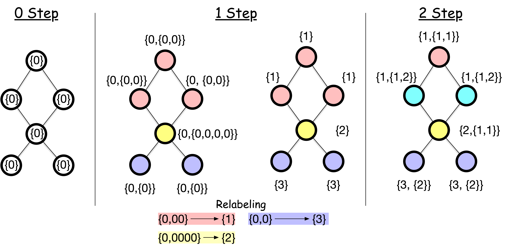

Exercise#
Exercise 01#
Create a network of landmasses and bridges of Binghamton, NY.
Find an Euler path that crosses all the bridges of Binghamton, NY exactly once.

# If you are using colab, uncomment the following line
# !sudo apt install libcairo2-dev pkg-config python3-dev
# !pip install pycairo cairocffi
# !pip install igraph
Define the edges
# This is a placeholder for your code for the exercise
edges = ...
Define the adjacnecy matrix (without for loops!)
A = ...
Visualize the graph
import igraph
import matplotlib.pyplot as plt
import numpy as np
def visualize_graph(A, **params):
A = np.array(A)
src, trg = np.where(A)
g = igraph.Graph(directed=False)
g.add_vertices(A.shape[0])
for s, t in zip(src, trg):
for _ in range(A[s, t]):
g.add_edge(s, t)
return igraph.plot(g, **params)
visualize_graph(A)
---------------------------------------------------------------------------
ValueError Traceback (most recent call last)
Cell In[4], line 15
12 g.add_edge(s, t)
13 return igraph.plot(g, **params)
---> 15 visualize_graph(A)
Cell In[4], line 7, in visualize_graph(A, **params)
5 def visualize_graph(A, **params):
6 A = np.array(A)
----> 7 src, trg = np.where(A)
8 g = igraph.Graph(directed=False)
9 g.add_vertices(A.shape[0])
ValueError: not enough values to unpack (expected 2, got 1)
Check if the graph has an Euler path
Exercise 02#
Let’s create a network from pre-existing data and check if it has an Euler path.
Select a network of your choice from Netzschleuder. For convenience, choose a network of nodes less than 5000.
Download the csv version of the data by clicking something like “3KiB” under
csvcolumn.Unzip the file and find “edges.csv”, open it with a text editor to familiarize yourself with the format.
Load the data using
pandas.Get the source and target nodes from the data to create an edge list.
Construct the adjacency matrix from the edge list.
Draw the graph using
igraph.Check if the graph has an Euler path.
Load the data by
import pandas as pd
df = pd.read_csv('edges.csv') # load the data
display(df)
Then, get the srce and target nodes to compose an edge list
src = ...
trg = ...
edges = ...
Create the adjacency matrix from the edge list
Get the degree of each node
deg = ...
Visualize the graph
visualize_graph(A)
Check if the graph has an Euler path
```---
jupytext:
formats: md:myst
text_representation:
extension: .md
format_name: myst
kernelspec:
display_name: Python 3
language: python
name: python3
launch_buttons:
notebook_interface: "classic"
colab_url: "https://colab.research.google.com"
thebe: true
binderhub_url: "https://mybinder.org" # The URL for your BinderHub (e.g., https://mybinder.org)
---
# Euler's solution
Euler consider two cases:
- a node has an even number of edges, or
- a node has an odd number of edges.
When a node has an even number $2k$ of edges, one can enter and leave the node $k$ times by crossing different edges.
When a node has an odd number $2k+1$ of edges, one can enter and leave the node $k$ times by crossing different edges but leave one last edge to cross. The only way to cross this last edge is that one starts or ends at the node.
Based up on the above reasoning, Euler leads to the following necessary (and later shown as sufficient) conditions:
:::{admonition} Euler's path
There exists a walk that crosses all edges exactly once if and only if all nodes have even number of edges, or exactly two nodes have an odd number of edges.
:::

Back to the Konigsberg bridge problem, every node has an odd number of edges, meaning that there is no way to cross all edges exactly once. What a sad story for the citizens of Konigsberg. But the problem was solved during World War II, where Koingberg was bombarded by Soviet Union, losing two of the seven bridges 🫠.
:::{figure-md} markdown-fig
<img src="../figs/seven-bridge-bombared.png" alt="fishy" width="50%">
Two bridges were bombed by Soviet Union, which allows the Euler path to exist.
:::
---
kernelspec:
display_name: Python 3 (ipykernel)
language: python
name: python3
---
<a target="_blank" href="https://colab.research.google.com/github/skojaku/adv-net-sci/blob/main/docs/lecture-note/m01-euler_tour/how-to-code-network.ipynb">
<img src="https://colab.research.google.com/assets/colab-badge.svg" alt="Open In Colab"/>
</a>
# Compute with networks
So far we worked out the network of bridges of Konigsberg by illustrating the network with points and lines.
From now, we will work with a representation of the network that can be easily computed with code.
## Network representation
An atomic element of a network is a node, i.e., a network is a collection of edges which are pairs of nodes.
We *label* a unique integer as an identifier for each node. For instance, the bridges of Konigsberg has 4 nodes, and we assign the number 0 to 3 to the nodes. An edge can be represented by a pair of nodes. For instance, the edge between node 0 and node 1 can be represented by the pair `(0, 1)`.
```{figure-md} numbered-koningsberg-graph

Labeled Knigsberg graph
Note
We label nodes starting from 0 with consecutive numbers, which is convenient for Python. However, this is not the only way to label nodes.
The Konigsberg graph can be represented by a list of edges.
edges = [(0,1), (0, 1), (0, 3), (1, 2), (1, 2), (1, 3), (2, 3)]
Another, more convenient format is the adjacency matrix. In this form, one regard the node index as a coordinate in the matrix. For instance, edge \((1,3)\) is represented by the entry in the second row and fourth column. The entry of the matrix represents the number of edges between two nodes. Thus, the zeros in the matrix represent the absence of edges.
A = [[0, 2, 0, 1],
[2, 0, 2, 1],
[0, 2, 0, 1],
[1, 1, 1, 0]]
or equivalently, using for loops:
import numpy as np
A = np.zeros((4, 4))
for i, j in edges:
A[i][j] += 1
A[j][i] += 1
Note
In the Konigsberg graph, the edges are undirected, meaning edge (i,j) is the same as edge (j,i), which is why we increment both entries \((i,j)\) and \((j,i)\) in the for loop. If the edges are directed, we treat (i,j) and (j,i) as two different edges, and increment only (i,j).
Edge counting#
Let us showcase the convenience of the adjacency matrix by counting the number of edges in the network.
The total number of edges in the network is the sum of the entities in the
np.sum(A) / 2
We divide by 2 because an edge corresponds to two entries in the matrix. Now, let us consider
It is also easy to compute the number of edges pertained to individual nodes by taking the row or column sum of the matrix.
np.sum(A, axis = 1)
The result is an array of length 4, where the i-th entry is the number of edges connected to node i.
Important
The number of edges connected to a node is called the degree of the node.
Tip
The np.sum(A, axis = 1) is the column sum of A. Alternatively, np.sum(A, axis = 0) is the row sum of A.
Check out the numpy documentation for more details.
Tip
If the adjacency matrix is scipy CSR format (or CSC format), you can instead use A_csr.sum(axis=1), A_csr.sum(axis=0), and A_csr.sum().
Check out the scipy documentation for more details.
We can check the number of nodes with odd degree by taking the modulus of the degree by 2.
deg = np.sum(A, axis = 1)
is_odd = deg % 2 == 1
is_odd
if np.sum(is_odd) == 2 or np.sum(is_odd) == 0:
print("The graph has a Euler path.")
else:
print("The graph does not have a Euler path.")
```---
jupytext:
formats: md:myst
text_representation:
extension: .md
format_name: myst
kernelspec:
display_name: Python 3
language: python
name: python3
---
# A puzzle
Back in 18th century, there was a city called *Königsberg* situated on the Pregel River in a historical region of Germany. The city had two large islands connected to each other and the mainland by seven bridges.
The citizens of Königsberg pondered a puzzle during their Sunday walks:
```{admonition} Problem
How could one walk through the city and cross each bridge exactly once?

The seven bridges of Königsberg#
Leonard Euler worked out the solution to this puzzle in 1736. He first simplified the city into a network of landmasses connected by bridges, by noting that the landareas, the positions of the islands and the bridges are nothing to do with the puzzle, and that the only thing that matters is the connections between the landmasses.

Euler’s graph of the bridges of Knigsberg#
Pen-and-paper worksheet#
Let’s follow the worksheet to solve the puzzle step by step.
Esteban Moro. Network science for kids! Mar 2017. URL: http://estebanmoro.org/2017/03/network-science-for-kids.
We will walk you through what these arrays mean, how they are generated, and how we can leverage them for efficient computations.
How to generate CSR format from an adjacency matrix#
Let’s walk you through how to store an example adjacency matrix in Compressed Sparse Row (CSR) format. Our example adjacency matrix is as follows.
0 |
1 |
2 |
3 |
4 |
5 |
6 |
7 |
8 |
9 |
10 |
|
|---|---|---|---|---|---|---|---|---|---|---|---|
0 |
1 |
||||||||||
1 |
1 |
1 |
|||||||||
2 |
1 |
1 |
1 |
||||||||
3 |
1 |
1 |
1 |
1 |
|||||||
4 |
1 |
1 |
|||||||||
5 |
1 |
||||||||||
6 |
1 |
1 |
1 |
||||||||
7 |
1 |
||||||||||
8 |
1 |
1 |
|||||||||
9 |
1 |
1 |
|||||||||
10 |
1 |
1 |
1 |
1 |
1 |
We will first create adjacency list, which is a dictionary consisting of the row IDs and column IDs for the non-zero entries in the adjacency matrix.
\(\{\text{Row ID}: (\text{Column ID}, \text{Value})\}\)
Concretely, in Python,
adj_list = {
0:[(10,1)],
1:[(2,1), (10, 1)],
2:[(1,1), (3,1), (10, 1)],
3:[(2,1), (4,1), (5,1), (6,1)],
#...
}
CSR format is a concatenation of the keys and values of the adjacency list, respectively. The CSR format has a concatenated array of the values, one for column IDs and one for the values, called indices and data, respectively.
import numpy as np
indices = np.array([vv[0] for k, v in adj_list.items() for vv in v])
indices
data = np.array([vv[1] for k, v in adj_list.items() for vv in v])
data
Additionally, the CSR format has another array called indptr, which stores the Row IDs of the non-zero entries in the adjacency matrix. This indptr array has a value such that indptr[i] is the first index of indices that corresponds to the i-th row of the adjacency matrix. This can be generated by
indptr = np.cumsum([0] + [len(adj_list[i]) for i in range(len(adj_list))])
indptr
where we added 0 at the beginning of the array to represent the first non-zero entry in the first row.
The first row ends at index len(adj_list[0])-1, and the second row starts at index len(adj_list[0]) and ends at index len(adj_list[0])+len(adj_list[1])-1, and so on.
Now we have three compressed vectors indptr, indices, and data, that together form the CSR format for the adjacency matrix.
How to use CSR format for efficient computations#
The key advantage of the CSR representation is the memory efficiency. But you can leverage the CSR format for more efficient computations, if you know the semantics of indptr, indices, and data arrays.
For instance, one can compute the degree of a node by using
node = 1
degree = indptr[node+1] - indptr[node]
degree
Let us break down the above code.
indptr[node]is the first index of theindicesarray that corresponds to thenode-th row of the adjacency matrix.indptr[node+1]is the first index of theindicesarray that corresponds to the(node+1)-th row of the adjacency matrix.Thus,
indptr[node+1] - indptr[node]is the number of non-zero entries in thenode-th row of the adjacency matrix, which is the degree of thenode-th node.
Using indices, it is easy to identify the neighbors of a given node by using
neighbors = indices[indptr[node]:indptr[node+1]]
neighbors
where indices[indptr[node]:indptr[node+1]] is the corresponding column IDs of the non-zero entries in the node-th row of the adjacency matrix, which corresponds to the node IDs connected to the node-th node.
The edge weights to the neighbors can be obtained by using
edge_weights = data[indptr[node]:indptr[node+1]]
edge_weights
Assignment#
We will compute the average path length of a network of scientists. The network is constructed from [1], where each node represents a scientist and two scientists are connected if they have co-authored a paper in Physical Review Journals from American Physical Society.
For students enrolled in SSIE 641
You will receive a dedicated link to the assignment repository from the instructor.
For those who are not enrolled in SSIE 641
You can access the assignment repository at Github.
This repository does not offer auto-grading. But you can grade the assignment by yourself by
bash grading-toolkit/grade_notebook.sh tests/test_01.py assignment/assignment.ipynbbash grading-toolkit/grade_notebook.sh tests/test_02.py assignment/assignment.ipynb
If you have an edge list, you can directly generate the CSR matrix without creating the dense matrix first.
from scipy.sparse import csr_matrix
edges = [(0,1), (0, 1), (0, 3), (1, 2), (1, 2), (1, 3), (2, 3)]
src = [edge[0] for edge in edges]
trg = [edge[1] for edge in edges]
values = [1 for _ in edges]
A_csr = csr_matrix((values, (src, trg)), shape=(4, 4))
A_csr
where src, trg, and values are lists of the source nodes, target nodes, and edge weights, respectively.#
jupytext: cell_metadata_filter: -all formats: md:myst text_representation: extension: .Rmd format_name: myst format_version: 0.13 jupytext_version: 1.16.3 kernelspec: display_name: Python 3 (ipykernel) language: python name: python3#
Computing the Shortest Paths and Connected Components#
Let’s use igraph to compute the shortest paths and connected components. We will then use scipy to compute them.
# If you are using Google Colab, uncomment the following line to install igraph
# !sudo apt install libcairo2-dev pkg-config python3-dev
# !pip install pycairo cairocffi
# !pip install igraph
igraph#
Create a graph#
Let us create a graph of 4 nodes and 4 edges. Our edge list is given by
edge_list = [(0, 1), (1, 2), (0, 2), (0, 3)]
igraph has an object Graph that stores a graph and provides methods to manipulate and analyze the graph. To create a graph from an edge list, we can use the add_edges method.
import igraph
g = igraph.Graph() # Create an empty graph
g.add_vertices(4) # Add 4 vertices
g.add_edges(edge_list) # Add edges to the graph
# Plot the graph
igraph.plot(g, bbox=(150, 150), vertex_label=list(range(4)))
Shortest Paths#
Let’s compute the paths between nodes 2 and 3.
g.get_all_simple_paths(2, to=3)
This method enumerates all possible simple paths between two nodes. This is OK for small networks but quickly becomes impractical for larger networks, as the number of paths increases exponentially with the size of the network.
Often, we are interested in the shortest path, which is the path with the smallest number of edges. The shortest path can be computed by using the get_shortest_paths method.
g.get_shortest_paths(2, to=3)
Note that there can be multiple shortest paths between two nodes. If we are interested in the “length” instead of the path itself, there is a more efficient function distances.
g.distances(2, 3)
Connected Components#
In the simple network above, we can see that for every pair of nodes, we can find a path connecting them. This is the definition of a connected graph. We can check this property for a given graph:
components = g.connected_components()
The components is a special object called VertexClustering in igraph.
It has the following useful functions and attributes:
print("membership: ", components.membership) # the IDs of the component each node belongs to.
print("sizes: ", list(components.sizes())) # the number of nodes in each component.
print("giant: ", components.giant()) # a subgraph of the largest connected component.
Exercise 01 🏋️♀️💪🧠#
Now, let us add two nodes that are not connected to the existing graph, and call
connected_componentsagain. 🔗➕Call
get_shortest_pathsbetween the two new nodes in different connected components. 🛣️🔍Get the largest connected component. 🌐🏆
Directed networks#
Let’s extend these ideas about paths and connected components to directed graphs.
edge_list =[(0, 1), (1, 2), (2, 1), (2, 3), (2, 5), (3, 1), (3, 4), (3, 5), (4, 5), (5, 3)]
g = igraph.Graph(directed=True)
g.add_vertices(6)
g.add_edges(edge_list)
igraph.plot(g, bbox=(250, 250), vertex_label=list(range(6)))
In directed graphs, edges and paths can be one-way. For instance, in our graph, you can go from node 0 to node 3, but not from 3 to 0.
print("From 0 to 3", g.get_all_simple_paths(0, to=3))
print("From 3 to 0", g.get_all_simple_paths(3, to=0))
The shortest path from 4 to 1 must take a longer route due to edge directions.
g.get_shortest_paths(4, 1)
Directed networks have two kinds of connected components.
Strongly connected components: Strongly connected means that there exists a direct path between every pair of nodes, i.e., that from any node to any other nodes while respecting the edge directionality.
Weakly connected components: Weakly connected means that there exists a path between every pair of nodes when ignoring the edge directionality.
print(list(g.connected_components(mode="strong")))
print(list(g.connected_components(mode="weak")))
Scipy#
We can create a graph, compute the shortest paths, and connected components using scipy.
Create a graph#
With scipy, we represent a network by an adjacency matrix using something called a Compressed Sparse Row (CSR) matrix. CSR matrices are efficient format for storing and manipulating sparse matrices. Why sparse is highlighed here? Because in many networks, the adjacency matrix is sparse, i.e., most of the entries are zero. For example, here is the adjacency matrix of a real-world network:

Most of the entries in this adjacency matrix are white, and white means that the value of the entry is zero. And the adjacency matrix looks very white! This is pretty common in real-world networks. We call these matrices “sparse” because they are mostly empty. And CSR matrices are a way to store these sparse matrices efficiently. Don’t worry too much about the technical details for now. If you’re curious to learn more, you can check out the Appendix.
The great thing is, scipy (especially the scipy.sparse module) provides efficient tools for working with these sparse matrices. This comes in really handy when we’re working with large networks.
Let create a graph using scipy.
from scipy import sparse # We will use sparse module in scipy
edge_list = [(0, 1), (1, 2), (0, 2), (0, 3)]
src = [src for src, dst in edge_list]
trg = [dst for src, dst in edge_list]
weight = [1 for src, dst in edge_list]
A = sparse.csr_matrix((weight, (src, trg)), shape=(4, 4))
A = A + A.T # Make the adjacency matrix symmetric
A
Let’s break down the code.
srcandtrgare the source and target nodes of the edges.weightis the weight of the edges.sparse.csr_matrix((weight, (src, trg)))creates a sparse matrix, fillingweightinto the positions specified by(src, trg).A.Tis the transpose ofAandA + A.Tmakes the adjacency matrix symmetric.
The CSR matrix does not print nicely. But you can see it by converting to a numpy array and printing it.
A.toarray()
Shortest Paths#
The sparse module has a submodule csgraph that provides APIs for network analysis.
For example, csgraph.shortest_path computes the shortest path length from a specific node to all other nodes.
from scipy.sparse import csgraph
# `indices` is the node to compute the shortest path from.
D = csgraph.shortest_path(A, indices=2, directed=False)
D
Advanced: If you want to get the actual paths (i.e., list of nodes in the path), you can pass return_predecessors=True to csgraph.shortest_path.
D, predecessors = csgraph.shortest_path(A, indices=2, directed=False, return_predecessors=True)
Connected Components#
Connected components can be computed by csgraph.connected_components.
n_components, labels = csgraph.connected_components(A, directed=False, return_labels=True)
print("Number of connected components:", n_components)
print("Labels:", labels)
n_componentsis the number of connected components.labelsis an array of lengthn_nodeswhere each element is the ID of the connected component the node belongs to.
Exercise 02 🏋️♀️💪🧠#
Let’s compute the average path length of a network from pre-existing data and check if how long on average it takes to go from any node to any other node.
Select a network of your choice from Netzschleuder. For convenience, choose a network of nodes less than 5000.
Download the csv version of the data by clicking something like “3KiB” under
csvcolumn.Unzip the file and find “edges.csv”, open it with a text editor to familiarize yourself with the format.
Load the data using
pandas.Get the source and target nodes from the data to create an edge list.
Construct a graph from the edge list, either using
igraphorscipy.Compute the average path length
Hint: Finding all shortest paths is a qubic time operation with respect to the number of nodes, or simply put, it takes a long time to compute. So compute the “estimate” by sampling many pairs of nodes uniformly at random and computing the average path length.— jupytext: cell_metadata_filter: -all formats: md:myst text_representation: extension: .Rmd format_name: myst format_version: 0.13 jupytext_version: 1.16.3 kernelspec: display_name: Python 3 (ipykernel) language: python name: python3#
Walks, Trails, Paths, and Connectedness#
Walks, Trails, Paths#
While we have already used the term path, let us make clear its definition, together with other related terms.
A walk is a sequence of nodes that are connected to form a continous route in a network. For instance, walk (0, 1, 2, 3) is a walk in the graph of the bridges of Konigsberg. But the sequence (0,2,3,1) is not a walk, because the node 0 is not directly connected to node 2.
A trail is a walk with no repeated edge. For instance, walk (0, 1, 2, 3) is also a trail as it does not cross the same edge twice. But walk (0,2,3,1,3) is not a trail due to the repeated edge (1,3).
A path is a walk without repeated node. For instance, walk (0,1,2,3) is a path. But walk (0, 1, 2, 1, 2, 3) is not a path due to the repeated node 1 and 2.
When a walk starts and ends at the same node, it is called a *loop. If the loop is a trail, it is called a circuit. If the loop is a path, it is called a cycle.
Question: Is a path always a trail, and is a trail always a path?

Labeled Knigsberg graph#
Shortest Path is the path with the smallest number of edges (or nodes) between two nodes. A shortest path from node 0 to 2 is (0, 1, 2). Two nodes can have multiple shortest paths e.g., (0, 3, 2).
The shortest path length is the number of edges in the shortest path, not the number of nodes! 👈👈
Note
Are there shortest trails and shortest walks? Shortest trails and shortest walks are fundamentally equivalent to shortest paths. A shortest trail must visit each node only once (otherwise it would not be the shortest), and similarly, a shortest walk does not repeat nodes (otherwise it would not be the shortest), both forming a shortest path.
Connectedness#
A network is connected if there is a path between every pair of nodes.
A network is disconnected if there is no path between some pairs of nodes.
A connected component of a network is a set of nodes that are connected to each other.
The giant component of a network is the largest connected component that contains a significant fraction of nodes in the network (in order of the number of nodes).

connected components of a network. the nodes with the same color form a connected component.#
Connectedness in directed networks#
We call a network is directed if the edges have a direction. Example directed networks include the network of Web pages, the network of friendships on X, the network of citations on academic papers.
In a directed network, a walk must follow the edge directions. Paths, trails, and loops extend similarly to directed networks. But one thing to keep in mind: a walk may not be reversible, meaning there can be a walk from one node to another but not vice versa.
This leads to two different types of connectedness as follows:
Strong connectedness: A directed network is said to be strongly connected if there is a path from every node to every other node.
Weak connectedness: A directed network is said to be weakly connected if there is a path from every node to every other node on its undirected counterpart.

connected components of a network. the nodes with the same color form a connected component.#
Question: Is a strongly-connected component always a weakly-connected component?
In the next section, we will learn how to compute the shortest paths and connected components of a network using a library igraph.
Why is our social network small world?#
jupytext: cell_metadata_filter: -all formats: md:myst text_representation: extension: .Rmd format_name: myst format_version: 0.13 jupytext_version: 1.16.3 kernelspec: display_name: Python 3 (ipykernel) language: python name: python3#
Small-world experiment#
How far are two people in a social network? Milgram and his colleagues conducted a series of expriment to find out in the 1960s.

Milgram’s small world experiment.#
The experiment went as follows:
Milgram first sent out packets to randomly selected people in Omaha, Nebraska, and Wichita, Kansas.
The recipient was asked to send the packet to the target person in Boston if they knew them. If not, they were to forward it to someone they knew on a first-name basis who might know the target.
The recipient continued to forward the packet to their acquaintances until it reached the target.
The results were surprising: out of the 160 letters sent, 64 successfully reached the target person by the chain of nearly six people, which was later called six degrees of separation. The results imply that, despite the fact that there were hundreds of millions of people in the United States, their social network was significantly compact, with two random people being connected to each other in only a few steps.
Tip
The term “Six degrees of separation” is commonly associated with Milgram’s experiment, but Milgram never used it. John Guare coined the term for his 1991 play and movie “Six Degrees of Separation.”
The results were later confirmed independently.
Yahoo research replicate the Milgram’s experiment by using emails. Started from more than 24,000 people, only 384 people reached the one of the 18 target person in 13 countries. Among the successful ones, the average length of the chain was about 4. When taken into account the broken chain, the average length was estimated between 5 and 7.[3]
Researchers in Facebook and University of Milan analyzed the social network n Facebook, which consisted of 721 million active users and 69 billion friendships. The average length of the shortest chain was found to be 4.74. [4]
Note
Zachary’s karate club is a famous network of 34 members of a karate club and documents of their links between friends. The network is undirected and unweighted.
The minimum spanning tree of the network can be found by the following code.
gmst = g.spanning_tree(weights=g.es["weight"]) # If not `weights` are not specified, the edges are assumed to be unweighted
igraph.plot(gmst, edge_width = gmst.es["weight"])
```---
jupytext:
formats: md:myst
text_representation:
extension: .md
format_name: myst
kernelspec:
display_name: Python 3
language: python
name: python3
---
# Percolation
Network robustness can be viewed as a inverse process of **percolation** on a network. What is percolation?
Imagine a grid where each square has a chance to become a little puddle. Two puddles are connected if they are next to each other. As more puddles appear, they start connecting with their neighbors to form bigger puddles. This is basically what percolation is all about!
Random failure can be viewed as an inverse process of percolation, where a puddle is dried up (i.e., removed from the network),
```{figure-md} percolation

Image taken from https://jamesmccaffrey.wordpress.com/2021/07/12/whatever-happened-to-percolation-theory/
Now, the big question is: When the probability of a node being puddle is \(p\), how big can our largest puddle get? 🌊 As we increase the chance of puddles appearing (that’s our \(p\)), the biggest puddle does not grow slowly but explodes in size when \(p\) reaches a critical value \(p_c\). This sudden change is what we call a phase transition! From the percolation perspective, we approach to the critical point from disconnected phase, whereas from the network robustness perspective, we approach to the critical point from connected phase.
Show code cell source
import igraph as ig
import numpy as np
import seaborn as sns
import matplotlib.pyplot as plt
def percolate(g, p):
return g.subgraph(np.where(np.random.rand(g.vcount()) < p)[0])
def largest_cluster_size(g):
return g.connected_components().giant().vcount()
n, nei = 500, 1
g = ig.Graph.Lattice([n, n], nei=nei, directed=False, mutual=False, circular=False)
p_values = np.linspace(0, 1, 20)
largest_sizes = [largest_cluster_size(percolate(g, p)) / n**2 for p in p_values]
sns.set(style="ticks", font_scale=1.2)
fig, ax = plt.subplots(figsize=(5, 5))
sns.lineplot(x=p_values, y=largest_sizes, ax=ax, marker="o")
ax.set(
xlabel="Probability (p)",
ylabel="Fractional Largest Cluster Size",
title="Percolation on a 500x500 Lattice",
)
sns.despine()
critical_p = 0.592746 # Critical probability for 2D square lattice
colors = sns.color_palette("colorblind", 3)
ax.axvline(x=critical_p, color="k", linestyle="--", alpha=0.7)
ax.fill_betweenx(
y=[0, 1], x1=0, x2=critical_p, alpha=0.2, color=colors[0], label="Disconnected"
)
ax.fill_betweenx(
y=[0, 1], x1=critical_p, x2=1, alpha=0.2, color=colors[1], label="Connected"
)
ax.legend().remove()
ax.annotate(
"Disconnected",
xy=(0.3, 0.5),
xytext=(0.4, 0.1),
textcoords="data",
horizontalalignment="right",
verticalalignment="center",
fontsize=14,
fontweight="bold",
)
ax.annotate(
"Connected",
xy=(0.9, 0.5),
xytext=(0.7, 0.1),
textcoords="data",
horizontalalignment="left",
verticalalignment="center",
fontsize=14,
fontweight="bold",
)
ax.set_xlim(0, 1)
Note
Want to see this in action? 🌟 Check out this interactive simulation. Play around with it and watch how the puddles grow and connect. 🌊
Note
The transition at \(p_c\) is discontinuous in the limit of large \(N\), called first-order phase transition. In practice, it is often a continuous transition because of the finite size of the network.
A criterion for the giant component#
Percolation theory focuses on lattice, a regular structure that is rare in real-world networks. What happens if the network has a complex structure? The Molloy-Reed criterion [5] provides a simple condition for the existence of a giant component in a rewired network. It states that a giant component is likely to exist if:
where \(k\) is the degree of a node, and \(\langle k \rangle\) and \(\langle k^2 \rangle\) are the average degree and the average of the square of the degree, respectively. The variable \(\kappa_0\) is a shorthand for the ratio. See the Appendix for the derivation of this criterion.
What does \(\kappa_0\) represent? It represents the heterogeneity of the degree distribution. For example, a high \(\kappa_0\) indicates that there are a few nodes with very high degrees and many nodes with low degrees. When \(\kappa_0\) is small, the nodes have similar degree. And Molloy-Reed criterion tells us an important fact about the role of degree distributions on the robustness of networks: the more heterogeneous the degree distribution is, the more likely the network is to have a giant component.
Note
The rewired network considered here is the configuration model, where the edges are rewired randomly while keeping the degree distribution fixed. We will discuss more about the configuration model later.
Exercise
Consider a random network of \(N\) nodes, where every pair of nodes are connected by an edge with a certain probability. Then, the degree \(k\) of a node is a binomial random variable, which we approximate by a Poisson random variable with mean \(\langle k \rangle\). The variance of the Poisson random variable is also \(\langle k \rangle\).
Derive \(\langle k^2 \rangle\) using \(\langle k \rangle\).
Hint: Variance is defined as \(\text{Var}(k) = \langle (k-\langle k \rangle)^2 \rangle\).
Compute the ratio \(\frac{\langle k^2 \rangle}{\langle k \rangle}\).
Check when the network satisfies the Molloy-Reed criterion.
Solution
Solution for Q1: To derive \(\langle k^2 \rangle\), we start with the definition of variance
Expanding the square, we get
Since \(\text{Var}(k) = \langle k \rangle\) for a Poisson distribution, we can substitute and rearrange
Solving for \(\langle k^2 \rangle\), we obtain
Solution for Q2: \(\frac{\langle k^2 \rangle}{\langle k \rangle} = 1 + \langle k \rangle\)
Solution for Q3: \(\langle k \rangle >1\). In other words, if a node has on average more than one neighbor, the random network is likely to have a giant component.
How many nodes are needed to break a network?#
When does a network become disconnected? Based on the Molloy-Reed criterion, we can identify the critical fraction of nodes \(f_c\) that need to be removed for the giant component to disappear in a network with an arbitrary degree distribution. This critical point is given by [6]:
See the Appendix for the derivation of this criterion.
Let us illustrate this by considering two kinds of networks:
Degree homogeneous network:
In case of a degree homogeneous network like a random network considered in the exercise above,
This suggests that the threshold is determined by the average degree \(\langle k \rangle\). A large \(\langle k \rangle\) results in a larger \(f_c\), meaning that the network is more robust against random failures.
Degree heterogeneous network:
Most real-world networks are degree heterogeneous, i.e., the degree distribution \(P(k) \sim k^{-\gamma}\) follows a power law (called scale-free network). In this case, \(f_c\) is given by
where \(k_{\text{min}}\) and \(k_{\text{max}}\) are the minimum and maximum degree, respectively. The variable \(\gamma\) is the exponent of the power law degree distribution, controlling the degree heterogeneity, where a lower \(\gamma\) results in a more degree heterogeneous network.
For regime \(2 < \gamma < 3\), the critical threshold \(f_c\) is determined by the extreme values of the degree distribution, \(k_{\text{min}}\) and \(k_{\text{max}}\). And \(f_c \rightarrow 1\) when the maximum degree \(k_{\text{max}} \in [k_{\text{min}}, N-1]\) increases. Notably, in this regime, the maximum degree \(k_{\text{max}}\) increases as the network size \(N\) increases, and this makes \(f_c \rightarrow 1\).
For regime \(\gamma > 3\), the critical threshold \(f_c\) is influenced by the minimum degree \(k_{\text{min}}\). In contrast to \(k_{\text{max}}\), \(k_{\text{min}}\) remains constant as the network size \(N\) grows. Consequently, the network disintegrates when a finite fraction of its nodes are removed.
Case study: Airport network#
Let’s consider an empirical network of international airports, where nodes are airports and edges denote a regular commercial flight between two airports.
Data loading:
Show code cell source
# Import necessary libraries
import igraph as ig
import numpy as np
import seaborn as sns
import matplotlib.pyplot as plt
import pandas as pd
# Load the airport network data from a CSV file
df = pd.read_csv("https://raw.githubusercontent.com/skojaku/core-periphery-detection/master/data/edge-table-airport.csv")
# Process the edge data
edges = df[["source", "target"]].to_numpy()
edges = np.unique(edges.reshape(-1), return_inverse=True)[1]
edges = edges.reshape(-1, 2)
# Create the original graph
g = ig.Graph()
g.add_vertices(np.unique(edges) + 1)
g.add_edges([tuple(edge) for edge in edges])
Based on the argument above, we can predict the critical point \(f_c\) for the airport network as follows:
import numpy as np
g # igraph object of the airport network
# Compute the degree distribution
deg = np.array(g.degree())
k_ave = np.mean(deg)
k_2 = np.mean(deg **2)
# Compute the critical fraction of nodes that need to be removed (prediction)
f_c = 1 - 1 / (k_2 / k_ave - 1)
print(f"The critical fraction of nodes that need to be removed is predicted to be {f_c:.3f}")
The \(f_c\) is very close to 1, meaning that the network is highly robust to random failures that it keeps the giant component until when almost all nodes are removed. Let us confirm this by simulating the random failures.
Show code cell source
# Create a copy of the original graph for manipulation
g_damaged = g.copy()
n_nodes = g.vcount() # Number of nodes in the graph
# Initialize list to store results
results = []
# Simulate random node removal and measure network connectivity
for i in range(n_nodes - 1): # Loop until only one node remains
# Randomly select and remove a node
node_idx = np.random.choice(g_damaged.vs.indices)
g_damaged.delete_vertices(node_idx)
# Evaluate the connectivity of the remaining network
components = g_damaged.connected_components()
connectivity = np.max(components.sizes()) / g.vcount()
# Save the results
results.append(
{
"connectivity": connectivity,
"frac_nodes_removed": (i + 1) / n_nodes,
}
)
# Convert results to a DataFrame
df_robustness_profile = pd.DataFrame(results)
# Set up the plot style
sns.set(style='white', font_scale=1.2)
sns.set_style('ticks')
# Create the plot
ax = df_robustness_profile.plot(
x="frac_nodes_removed",
y="connectivity",
kind="line",
figsize=(5, 5),
label="Random attack",
linewidth=2,
color = sns.color_palette()[0]
)
# Set labels for x and y axes
plt.xlabel("Proportion of nodes removed")
plt.ylabel("Fractional size of largest component")
# Remove the legend
plt.legend().remove()
# Add a diagonal line from top left to bottom right
ax.plot([0, 1], [1, 0], color='gray', linestyle='--')
# Adjust the plot limits to ensure the diagonal line is visible
ax.set_xlim(0, 1)
ax.set_ylim(0, 1)
# Add a vertical line at the critical fraction
ax.axvline(x=f_c, color='red', linestyle='--', alpha=0.7, label="Critical fraction")
# Remove top and right spines of the plot
sns.despine()
The robustness profile of the airport network shows a very robust nature of the network, i.e., the airport network keeps the giant component until almost all nodes are removed.
Targeted attacks#
A key implication of the random failures is that a hub plays a critical role in holding the network together. This also implies a vulnerability of the network to targeted attacks. Namely, if we remove the hub preferentially, the network can be quickly disconnected into small components.
One can consider a targeted attack as a process of reducing the degree of nodes in a network. The degree-based attack, for example, reduces the maximum degree of the network, together with the degrees of neighboring nodes. An effective attack is one that quickly breaks the Molloy-Reed criterion, and from this perspective, the degree-based attack is not effective because it reduces the maximum degree of the network, a major contributor to the degree heterogeneity, \(\kappa_0\).
How to design a robust network?#
Based on the percolation theory, how we do we design a network that is robust against random failures and targeted attacks? Two key ingredients are:
Degree heterogeneity: As we have seen in the percolation theory, the more heterogeneous the degree distribution is, the more likely the network is to have a giant component.
Resilience to hub removal: A network is vulnerable to targeted attacks if the removal of a single node significantly decreases the heterogeneity of the degree distribution. The most susceptible structure is a star graph, where a central node connects to all other nodes, as removing this central node will disconnect the network.
Exercise
What is the design strategy to make a network robust against targeted attacks? Design a network that is robust against both random failures and targeted attacks.
An answer
A bimodal degree distribution can enhance network robustness against both random failures and targeted attacks. In this setup, \((1-r)\) portion of nodes have a degree of 1, while \(r\) portion of nodes have a high degree, \(k_{\text{max}}\). This structure ensures that the network remains connected even if a hub is removed, as other hubs maintain the connectivity. It also withstands random failures due to its heterogeneous degree distribution.
Hands-on: Robustness (Random attack)#
We consider a small social network of 34 members in a university karate club, called Zachary’s karate club network.
import igraph
g = igraph.Graph.Famous("Zachary")
igraph.plot(g, vertex_size=20)
Let’s break the network 😈! We will remove nodes one by one and see how the connectivity of the network changes at each step. It is useful to create a copy of the network to keep the original network unchanged.
g_original = g.copy()
Robustness against random failures#
Let us remove a single node from the network. To this end, we need to first identify which nodes are in the network. With igraph, the IDs of the nodes in a graph are accessible through Graph.vs.indices as follows:
print(g.vs.indices)
We randomly choose a node and remove it from the network by using Graph.delete_vertices.
import numpy as np
node_idx = np.random.choice(g.vs.indices)
g.delete_vertices(node_idx)
print("Node removed:", node_idx)
print("Nodes remaining:", g.vs.indices)
Note
np.random.choice(array) takes an array array and returns a single element from the array.
For example, np.random.choice(np.array([1, 2, 3])) returns either 1, 2, or 3 with equal probability.
See the documentation for more details.
The connectivity of the network is the fraction of nodes in the largest connected component of the network after node removal.
We can get the connected components of the network by using Graph.connected_components.
components = g.connected_components()
The sizes of the connected components are accessible via Graph.connected_components.sizes.
components.sizes()
Thus, the connectivity of the network can be computed by
components = g.connected_components()
connectivity = np.max(components.sizes()) / g_original.vcount()
connectivity
Putting together the above code, let us compute the robustness profile of the network.
import pandas as pd
g = g_original.copy() # restore the network
n_nodes = g.vcount() # Number of nodes
results = []
for i in range(n_nodes -1): # Loop if the network has at least one node
# Remove a randomly selected node
node_idx = np.random.choice(g.vs.indices)
g.delete_vertices(node_idx)
# Evaluate the connectivity
components = g.connected_components()
connectivity = np.max(components.sizes()) / g_original.vcount()
# Save the results
results.append(
{
"connectivity": connectivity,
"frac_nodes_removed": (i + 1) / n_nodes,
}
)
df_robustness_profile = pd.DataFrame(results)
Let us plot the robustness profile.
import matplotlib.pyplot as plt
import seaborn as sns
sns.set(style='white', font_scale=1.2)
sns.set_style('ticks')
ax = df_robustness_profile.plot(
x="frac_nodes_removed",
y="connectivity",
kind="line",
figsize=(5, 5),
label="Random attack",
)
plt.xlabel("Proportion of nodes removed")
plt.ylabel("Connectivity")
plt.legend().remove()
plt.show()
Targeted attack#
In a targeted attack, nodes are removed based on specific criteria rather than randomly. One common strategy is to remove nodes from the largest node degree to the smallest, based on the idea that removing nodes with many edges is more likely to disrupt the network connectivity.
The degree of the nodes is accessible via Graph.degree.
print(g_original.degree())
We compute the robustness profile by removing nodes with the largest degree and measuring the connectivity of the network after each removal.
g = g_original.copy() # restore the network
n_nodes = g.vcount() # Number of nodes
results = []
for i in range(n_nodes -1): # Loop if the network has at least one node
# Remove the nodes with thelargest degree
node_idx = g.vs.indices[np.argmax(g.degree())]
g.delete_vertices(node_idx)
# Evaluate the connectivity
components = g.connected_components()
connectivity = np.max(components.sizes()) / g_original.vcount()
# Save the results
results.append(
{
"connectivity": connectivity,
"frac_nodes_removed": (i + 1) / n_nodes,
}
)
df_robustness_profile_targeted = pd.DataFrame(results)
sns.set(style='white', font_scale=1.2)
sns.set_style('ticks')
sns.set(style="white", font_scale=1.2)
sns.set_style("ticks")
ax = df_robustness_profile.plot(
x="frac_nodes_removed",
y="connectivity",
kind="line",
figsize=(5, 5),
label="Random attack",
)
ax = df_robustness_profile_targeted.plot(
x="frac_nodes_removed",
y="connectivity",
kind="line",
label="Targeted attack",
ax=ax,
)
ax.set_xlabel("Proportion of nodes removed")
ax.set_ylabel("Connectivity")
ax.legend(frameon=False)
plt.show()
While the network is robust against the random attacks, it is vulnerable to the degree-based targeted attack.— jupytext: formats: md:myst text_representation: extension: .md format_name: myst kernelspec: display_name: Python 3 language: python name: python3#
Network Robustness#
Nodes and edges can fail or be attacked, which disrupt the connectivity of a network. Roughly speaking, we say a network is robust if it maintain most of its connectivity after failures or attacks. There are different types of attacks, together with how we quantify the damage they cause. So let us first showcase a case study with code.
Random node failures#
Nodes can fail and disconnect from networks, such as power station closures in power grids. This is modeled as a random failure, where randomly chosen nodes are removed from the network. When a node fails, it and its edges are removed.
The damage varies depending on the node to be removed. The damage to the network can be measued in many different ways, but an accepted measure is the loss of connectivity, defined as the fraction of nodes left in the largest connected part of the network after the failure.

The impact of removing a single node varies based on which node is removed.#
Multiple nodes can fail simultaneously, e.g., due to natural disasters like earthquakes or tsunamis. Thus it is often useful to assess the robustness of the network against such failures. Robustness profile is a plot of the connectivity drop as a function of the number of nodes removed. It provides a visual summary of the robustness of the network against a given sequential failure of nodes. In random failure, the order of nodes removed is random.

Robustness profile of a network for a sequential failure of nodes.#
Beyond the qualitative observation, it is useful to quantify the robustness of the network. The \(R\)-index is a single number that summarizes the robustness of the network. It is defined as the area under the connectivity curve with integral approximation.
where \(y_k\) is the connectivity at fraction \(k/N\) of nodes removed, where \(N\) is the total number of nodes in the network. A higher value indicates that the network is robust against the attack. The \(R\)-index has a maximum value of 1/2 (i.e., which corresponds to a diagonal line in the plot above).
Targeted attack#
A network robust against random failures can still be fragmented by targeted attacks. In targeted attacks, nodes are removed based on specific criteria rather than randomly. For example, nodes can be removed in order of their degree, starting with the largest degree to the smallest degree. The rationale for this attack strategy is that large-degree nodes have many connections, so removing them disrupts the network more significantly.
Degree-based attack is not the only form of targeted attacks. Other forms of targeted attacks include removing nodes based on their centrality (closeness centrality, betweenness centrality) and those based on proximity.
What’s next?#
In the next section, we will code up a simple example to compute the robustness profile of a network using Python.
Module 3: Robustness#
What to learn in this module#
In this module, we will learn about network robustness. We will learn:
Minimum spanning tree
Network robustness against random and targeted attacks
Keywords: minimum spanning tree, Kruskal’s algorithm, Prim’s algorithm, random attacks, targeted attacks, network robustness, robustness index— jupytext: formats: md:myst text_representation: extension: .md format_name: myst kernelspec: display_name: Python 3 language: python name: python3
Degree distribution#

Understanding degree distribution is the first key step to understand networks! And often, we want to see how the degree distribution looks like by plotting it like using histogram. But, it is not as easy as it may seem…
Visualization basics#
To learn the basics of data visualization, please take a pen and paper exercise.
Coding exercise#
Exercise: Plotting degree distribution
Plotting degree distribution#
(The following content includes the answer to the exercise. So please do the exercise first before reading the following content.)
We will first introduce a formal definition of the degree distribution. Then, we will learn how to plot the degree distribution of a network.
The degree of a node \(i\), denoted by \(d_i\), is the number of edges connected to it. With the adjacency matrix \(A\), the degree of node \(i\) is given by:
Let us compute the degree distribution of a network. We will create a Barabási-Albert network with \(N=10,000\) nodes and \(m=1\) edge per node.
import igraph
g = igraph.Graph.Barabasi(n = 10000, m = 1) # Create a Barabási-Albert network
A = g.get_adjacency() # Get the adjacency matrix
Compute the degree of each node by summing the elements of the adjacency matrix along the rows.
import numpy as np
deg = np.sum(A, axis=1)
deg = deg.flatten()
The degree distribution \(p(k)\) can be computed by counting the number of nodes with each degree and dividing by the total number of nodes.
p_deg = np.bincount(deg) / len(deg)
Let us plot the degree distribution. This is not as trivial as you might think… 🤔
import seaborn as sns
import matplotlib.pyplot as plt
ax = sns.lineplot(x=np.arange(len(p_deg)), y=p_deg)
ax.set_xlabel('Degree')
ax.set_ylabel('Probability')
While it clearly shows that most nodes have small degree, it does not show the tail of the distribution clearly, and often it is this tail that is of great interest (e.g., hub nodes). To show the tail of the distribution more clearly, we can use a log-log plot.
ax = sns.lineplot(x=np.arange(len(p_deg)), y=p_deg)
ax.set_xscale('log')
ax.set_yscale('log')
ax.set_ylim(np.min(p_deg[p_deg>0])*0.01, None)
ax.set_xlabel('Degree')
ax.set_ylabel('Probability')
We see fluctuations for large degree nodes because of the small number of nodes with large degree. One can use “binning” to smooth the plot. Binning involves grouping the data into bins and calculating the fraction of data within each bin. However, selecting an appropriate bin size can be challenging, and even with a well-chosen bin size, some information may be lost.
A more convenient way is to use the complementary cumulative distribution function (CCDF). The CCDF at degree \(k\) is the probability that a randomly chosen node has degree \(k'\) greater than \(k\) (\(k' > k\)). For a visual comparison of CCDF and PDF, see Figure 3 in [7] or the arxiv version
CCDF is a monotonically decreasing function of \(k\).
CCDF encompasses the full information of \(p(k)\), i.e., taking the derivative of CCDF gives \(p(k)\).
CCDF can be plotted as a smooth curve on a log-log scale without binning.
ccdf_deg = 1 - np.cumsum(p_deg)[:-1] # 1 - CDF (cumulative distribution function).
# The last element is excluded because it is always 1, resulting in CCDF=0, which cannot be plotted on a log-log scale.
ax = sns.lineplot(x=np.arange(len(ccdf_deg)), y=ccdf_deg)
ax.set_xscale('log')
ax.set_yscale('log')
ax.set_xlabel('Degree')
ax.set_ylabel('CCDF')
Note
CCDF (complementary cumulative distribution function) is used instead of CDF (cumulative distribution function) because it highlights the tail of the distribution better in a log-log plot. A log scale expands small values and compresses large values. In a CDF, large degree nodes have values close to 1, compressing the tail. In a CCDF, large degree nodes have small values, making the tail more visible.
The slope of the CCDF tells us the heterogeneity of the degree distribution.
Steep slope: more homogeneous degree distribution (similar degrees)
Flat slope: more heterogeneous degree distribution (wide range of degrees)
The slope of the CCDF is related to the power-law exponent of the degree distribution. A power-law degree distribution is described by a continuous distribution with the density function (not the probability mass) \(p(d)\) given by [8]:
where:
\(p(k)\) is the probability density of a node having degree \(k\)
\(\gamma\) is the power-law exponent
\(k_{\min}\) is the minimum degree
Note
The degree distribution is discrete but often approximated by a continuous distribution for mathematical convenience. While generally accurate, caution is needed as the reliability varies depending on the range of the degrees. See [8] for more details.
Note
The power-law distribution is ill-defined for \(d=0\), which is why there must be a minimum degree \(d_{\min}\) to avoid this issue.
Note
There has been a long-standing debate in network science as to whether the power-law well represents the real-world networks. Power-law is just one of many possible distributions with a heavy tail (i.e., a long tail on the right side of the distribution), and other distributions may also fit the data well such as log-normal distribution. This discussion is critical as many theories in network science are built on the assumption of the form of the degree distribution. See [9][10][11][12] for the debate.
The CCDF for the power-law distribution is given by:
Taking the logarithm:
Thus, the slope of the CCDF in a log-log plot is related to the power-law exponent \(\gamma\). Specifically, a steeper negative slope (i.e., a more negative value of \(-\gamma + 1\)) corresponds to a larger \(\gamma\). A larger \(\gamma\) indicates a more homogeneous degree distribution, where the probability of finding nodes with very high degrees decreases more rapidly. Conversely, a flatter slope (i.e., a value of \(-\gamma + 1\) being closer to zero) corresponds to a smaller \(\gamma\). A smaller \(\gamma\) indicates a more heterogeneous degree distribution, where there’s a high probability of finding nodes with high degrees compared to that with a large \(\gamma\) value.
For students interested in real-world examples of the CCDF plot, refer to Figure 4 in [7], or the arxiv version
In sum, the CCDF in a log-log plot provides a convenient visual summary of the degree distribution, with the slope of the CCDF providing a measure of the heterogeneity of the degree distribution.
Degree distribution of a friend#
Continuing from the previous page, we will now consider the degree distribution of a friend of a node.
There are two ways to sample a friend of a node.
Sample a node uniformly at random and then sample a friend of the node.
Sample a friendship (i.e., edge) uniformly at random and then sample an end node of the edge.
Let us focus on the second case and leave the first case for interested students as an exercise. In the second case, we sample an edge from the network. This sampling is biased towards nodes with many edges, i.e., a person with \(d\) edges is \(d\) times more likely to be sampled than someone with 1 edge. Thus, the degree distribution \(p'(k)\) of a friend is given by
The additional term \(k\) reflects the fact that a person with \(k\) friends is \(k\) times more likely to be sampled than someone with 1 friend. Term \(C\) is the normalization constant that ensures the sum of probabilities \(p'(k)\) over all \(k\) is 1, which can be easily computed as follows:
where \(\langle k \rangle\) is the average degree of the network. Substituting \(C\) into \(p'(k)\), we get:
This is the degree distribution of a friend, and it is easy to verify that the average degree of a friend is given by
which is always larger than \(\langle k \rangle\):
with equality only if every node has the same degree. This is a proof of the friendship paradox 😉!
Note
The distribution \(p'(k)\) is related to the excess degree distribution given by
The term excess comes from the fact that the distribution represents the number of additional connections a randomly chosen friend has, beyond the connection that led to their selection. It excludes the link to the focal node and focuses on the remaining connections of the selected friend.
Note
The friend’s degree, \(\frac{\langle k^2 \rangle}{\langle k \rangle}\), concides with a term in Molloy-Reed condition:
which is a condition for the existence of a giant component in a network. The Molloy-Reed condition states that the average degree of a node’s friends must be at least 2 (the inequality is strict because the transition from a small component to a giant component is discontinuous). If a friend has only one edge, you and your friend form an isolated component. If a friend has two edges on average, your friend is a friend of someone else, and that someone else is also friend of another someone else and so on, forming a giant component.
Plotting degree distribution of a friend#
Let us compare the degree distribution of a node and its friend. We first get the edges in the network, from which we sample a friend.
from scipy import sparse
src, trg, _ = sparse.find(A)
sparse.find(A)returns the source node, target node, and edge weight of the edge.srcis the source node of the edgetrgis the target node of the edge_is used to ignore the edge weight values, as we only need the source and target nodes for this analysis.
Now, let us get the degree of each friend
deg_friend = deg[src]
p_deg_friend = np.bincount(deg_friend) / len(deg_friend)
The CCDF of the degree distributions of a node and a friend can be computed by:
ccdf_deg = 1 - np.cumsum(p_deg)[:-1]
ccdf_deg_friend = 1 - np.cumsum(p_deg_friend)[:-1]
and plotted by:
import seaborn as sns
import matplotlib.pyplot as plt
ax = sns.lineplot(x=np.arange(len(ccdf_deg)), y=ccdf_deg, label='Node')
ax = sns.lineplot(x=np.arange(len(ccdf_deg)), y=ccdf_deg_friend, label='Friend', ax = ax)
ax.set_xscale('log')
ax.set_yscale('log')
ax.set_xlabel('Degree')
ax.set_ylabel('CCDF')
ax.legend(frameon = False)
The slope of the CCDF of a friend is flatter than that of a node, indicating that the degree distribution of a friend is biased towards higher degrees.
┌─────────────────────────────────────────────────────────────┐
[📇] Receive Your Card Get a card with a unique letter
[🤝] Meet and Greet (5 mins) Move around, exchange cards with at least one friend
[🧮] Count Connections (2 mins) Count received cards, write number, return cards
[📈] Calculate Average (2 mins) Calculate average ‘friend count’ of your friends
[📝] Fill Form Write your average and your own friend count in a separate sheet
└─────────────────────────────────────────────────────────────┘
❗ Important Notes: • This is a fun experiment, not a popularity contest • Be respectful and inclusive during the meet and greet • If you finish early, wait patiently for further instructions
## The origin of the friendship paradox
The paradox arises not because of the way we form friendships. It's about measurement! For example a person with 100 friends generates 100 cards, while a person with 1 friend generates only 1 card. If we average friend counts over the cards, popular people are counted more. This is where the friendship paradox comes from.
In network terms, cards represent edges and people represent nodes. The friendship paradox arises because we measure at different levels: nodes or edges. The average friend count at the node level is lower than at the edge level because popular people are counted more often at the edge level.
- **🎉 Fun Challenge**: Can you create a network where your friends have the most friends? 🤔💡 Give it a try in this {{ '[Friendship Paradox Game! 🎮✨]( BASE_URL/vis/friendship-paradox-game.html)'.replace('BASE_URL', base_url) }}
- **Question**: Can you create a network where the friendship paradox is absent? In other words, can you create a graph, where your friends have the same number of friends as you?
# Vaccination Game
Beyond an interesting trivia, the friendship paradox has many practical utilities.
- **🎉 Fun Challenge**: Can you control the spread of a virus by strategically vaccinating individuals? 🤔💡 Give it a try in this {{ '[Vaccination Game! 🎮✨]( BASE_URL/vis/vaccination-game.html)'.replace('BASE_URL', base_url) }}
# Module 4: Friendship Paradox
## What to learn in this module
In this module, we will learn about the friendship paradox. Specifically,
- Friendship paradox: what is it, why it's important, and what are the consequences?
- **Keywords**: friendship paradox, degree bias---
jupytext:
cell_metadata_filter: -all
formats: md:myst
text_representation:
extension: .Rmd
format_name: myst
format_version: 0.13
jupytext_version: 1.16.3
kernelspec:
display_name: Python 3 (ipykernel)
language: python
name: python3
---
<a target="_blank" href="https://colab.research.google.com/github/skojaku/adv-net-sci/blob/main/notebooks/exercise-m05-clustering.ipynb">
<img src="https://colab.research.google.com/assets/colab-badge.svg" alt="Open In Colab"/>
</a>
# Hands-on: Clustering
```{code-cell} ipython3
# If you are using Google Colab, uncomment the following line to install igraph
# !sudo apt install libcairo2-dev pkg-config python3-dev
# !pip install pycairo cairocffi
# !pip install igraph
Modularity maximization#
Let us showcase how to use igraph to detect communities with modularity. We will use the Karate Club Network as an example.
import igraph
g = igraph.Graph.Famous("Zachary")
igraph.plot(g, vertex_size=20)
When it comes to maximizing modularity, there are a variety of algorithms to choose from.
Two of the most popular ones are the Louvain and Leiden algorithms, both of which are implemented in igraph. The Louvain algorithm has been around for quite some time and is a classic choice, while the Leiden algorithm is a newer bee that often yields better accuracy. For our example, we’ll be using the Leiden algorithm, and I think you’ll find it really effective!
communities = g.community_leiden(resolution=1, objective_function= "modularity")
What is resolution? It is a parameter that helps us tackle the resolution limit of the modularity maximization algorithm [13]!
In simple terms, when we use the resolution parameter \(\rho\), the modularity formula can be rewritten as
follow:
Here, the parameter \(\rho\) plays a crucial role in balancing the positive and negative parts of the equation. The resolution limit comes into play because of the diminishing effect of the negative term as the number of edges \(m\) increases. The parameter \(\rho\) can adjust this balance and allow us to circumvent the resolution limit.
What is communities? This is a list of communities, where each community is represented by a list of nodes by their indices.
print(communities)
Let us visualize the communities by coloring the nodes in the graph.
import seaborn as sns
community_membership = communities.membership
palette = sns.color_palette().as_hex()
igraph.plot(g, vertex_color=[palette[i] for i in community_membership])
community_membership: This is a list of community membership for each node.palette: This is a list of colors to use for the communities.igraph.plot(g, vertex_color=[palette[i] for i in community_membership]): This plots the graph ‘g’ with nodes colored by their community.
Exercise 01 🏋️♀️💪🧠#
Select a network of your choice from Netzschleuder. For convenience, choose a network of nodes less than 5000.
Download the csv version of the data by clicking something like “3KiB” under
csvcolumn.Unzip the file and find “edges.csv”, open it with a text editor to familiarize yourself with the format.
Load the data using
pandas.Get the source and target nodes from the data to create an edge list.
Construct a graph from the edge list, either using
igraphorscipy.Find communities by maximizing the modularity and visualize them.
Try at least three different values of the resolution parameter and observe how the community structure changes.
# Your code here
Stochstic Block Model#
Let us turn the SBM as our community detection tool using graph-tool. This is a powerful library for network analysis, with a focus on the stochastic block model.
#
# Uncomment the following code if you are using Google Colab
#
#!wget https://downloads.skewed.de/skewed-keyring/skewed-keyring_1.0_all_$(lsb_release -s -c).deb
#!dpkg -i skewed-keyring_1.0_all_$(lsb_release -s -c).deb
#!echo "deb [signed-by=/usr/share/keyrings/skewed-keyring.gpg] https://downloads.skewed.de/apt $(lsb_release -s -c) main" > /etc/apt/sources.list.d/skewed.list
#!apt-get update
#!apt-get install python3-graph-tool python3-matplotlib python3-cairo
#!apt purge python3-cairo
#!apt install libcairo2-dev pkg-config python3-dev
#!pip install --force-reinstall pycairo
#!pip install zstandard
We will identify the communities using the stochastic block model as follows. First, we will convert the graph object in igraph to that in graph-tool.
import graph_tool.all as gt
import numpy as np
import igraph
# igraph object
g = igraph.Graph.Famous("Zachary")
# Set random seed for reproducibility
np.random.seed(42)
# Convert the graph object in igraph to that in graph-tool
edges = g.get_edgelist()
r, c = zip(*edges)
g_gt = gt.Graph(directed=False)
g_gt.add_edge_list(np.vstack([r, c]).T)
Then, we will fit the stochastic block model to the graph.
# Fit the stochastic block model
state = gt.minimize_blockmodel_dl(
g_gt,
state_args={"deg_corr": False, "B_min":2, "B_max":10},
)
b = state.get_blocks()
B_minandB_maxare the minimum and maximum number of communities to consider.deg_corris a boolean flag to switch to the degree-corrected SBM [14].
Note
Here’s a fun fact: the likelihood maximization on its own can’t figure out how many communities there should be. But graph-tool has a clever trick to circumvent this limitation.
graph-tool actually fits multiple SBMs, each with a different number of communities. Then, it picks the most plausible one based on a model selection criterion.
Let’s visualize the communities to see what we got.
Show code cell source
# Convert the block assignments to a list
community_membership = b.get_array()
# The community labels may consist of non-consecutive integers, e.g., 10, 8, 1, 4, ...
# So we reassign the community labels to be 0, 1, 2, ...
community_membership = np.unique(community_membership, return_inverse=True)[1]
community_membership
# Create a color palette
import matplotlib.pyplot as plt
import seaborn as sns
palette = sns.color_palette().as_hex()
# Plot the graph with nodes colored by their community
fig, ax = plt.subplots(figsize=(10, 8))
igraph.plot(
g,
target=ax,
vertex_color=[palette[i] for i in community_membership],
)
plt.axis('off')
plt.tight_layout()
plt.show()
What we’re seeing here isn’t a failure at all. In fact, it’s the best partition according to our stochastic block model. The model has discovered something called a core-periphery structure [15]. Let me break that down:
Think of a major international airport (the core) and smaller regional airports (the periphery).
Major international airports have many flights connecting to each other (densely connected).
Smaller regional airports have fewer connections among themselves (sparsely connected).
Many regional airports have flights to major hubs (periphery connected to the core).
That’s exactly what our model found in this network.
If we look at the adjacency matrix, we would see something that looks like an upside-down “L”. This shape is like a signature for core-periphery structures.
# Convert igraph Graph to adjacency matrix
A = np.array(g.get_adjacency().data)
# Sort nodes based on their community (core first, then periphery)
sorted_indices = np.argsort(community_membership)
A_sorted = A[sorted_indices][:, sorted_indices]
# Plot the sorted adjacency matrix
plt.figure(figsize=(10, 8))
plt.imshow(A_sorted, cmap='binary')
plt.title("Sorted Adjacency Matrix: Core-Periphery Structure")
plt.xlabel("Node Index (sorted)")
plt.ylabel("Node Index (sorted)")
plt.tight_layout()
plt.show()
Exercise 02 🏋️♀️💪🧠#
Select a network of your choice from Netzschleuder. For convenience, choose a network of nodes less than 5000.
Download the csv version of the data by clicking something like “3KiB” under
csvcolumn.Unzip the file and find “edges.csv”, open it with a text editor to familiarize yourself with the format.
Load the data using
pandas.Get the source and target nodes from the data to create an edge list.
Construct a graph from the edge list, either using
igraphorscipy.Find communities by fitting the stochastic block model and visualize them.
Try
deg_corr=Trueand compare the results with those fromdeg_corr=False.
Modularity Demo#
Let’s learn how the modularity works by playing with a community detection game!
Exercise 1
Find communities by maximizing the modularity. Modularity maximization (two communities) 🎮
One of the good things about modularity is that it can figure out how many communities there should be all by itself! 🕵️♀️ Let’s have some fun with this idea. We’re going to play the same game again, but this time, we’ll start with a different number of communities. See how the modularity score changes as we move things around.
Exercise 2
Find communities by maximizing the modularity. Modularity maximization (four communities) 🎮
Now, let’s take our modularity maximization for a real-world example! 🥋 We’re going to use the famous karate club network. This network represents friendships between members of a university karate club. It’s a classic in the world of network science, and it’s perfect for seeing how modularity works in practice.
Exercise 3
Find communities by maximizing the modularity. Modularity maximization (four communities) 🎮
Limitation of Modularity#
Like many other community detection methods, modularity is not a silver bullet. Thanks to extensive research, we know many limitations of modularity. Let’s take a look at a few of them.
Resolution limit#
The modularity finds two cliques connected by a single edge as two separate communities. But what if we add another community to this network? Our intuition tells us that, because communities are local structure, the two cliques should remain separated by the modularity. But is this the case?
Exercise 4
Find communities by maximizing the modularity. Modularity maximization (four communities) 🎮
Click here to see the solution
The best modularity score actually comes from merging our two cliques into one big community. This behavior is what we call the Resolution limit [13]. Modularity can’t quite make out communities that are smaller than a certain size!
Think of it like this: modularity is trying to see the big picture, but it misses the little details. In network terms, the number of edges \(m_c\) in a community \(c\) has to be bigger than a certain size. This size is related to the total number of edges \(m\) in the whole network. We write this mathematically as \({\cal O}(m)\).
Spurious communities#
What if the network does not have any communities at all? Does the modularity find no communities? To find out, let’s run the modularity on a random network, where each pair of nodes is connected randomly with the same probability.
Exercise 5
Find communities by maximizing the modularity. Modularity maximization (four communities) 🎮
Click here to see the solution
Surprise, surprise! 😮 Modularity finds communities even in our random network, and with a very high score too! It’s like finding shapes in clouds - sometimes our brains (or algorithms) see patterns where there aren’t any.
The wild thing is that the modularity score for this random network is even higher than what we saw for our network with two clear cliques!
This teaches us two important lessons:
We can’t compare modularity scores between different networks. It’s like comparing apples and oranges! 🍎🍊
A high modularity score doesn’t always mean we’ve found communities.
Interested readers can read more about this in this tweet by Tiago Peixoto and the discussion here.
Modularity maximization is not a reliable method to find communities in networks. Here's a simple example showing why:
— Tiago Peixoto (@tiagopeixoto) December 2, 2021
1. Generate an Erdős-Rényi random graph with N nodes and average degree <k>.
2. Find the maximum modularity partition. pic.twitter.com/MTt5DdFXSX
So should we avoid modularity?#
The simple answer is no. Modularity is still a powerful tool for finding communities in networks. Like any other method, it has its limitations. And knowing these limitations is crucial for using it effectively. There is “free lunch” in community detection [16].
When these implicit assumptions are met, modularity is in fact a very powerful method for community detection. For example, it is in fact an “optimal” method for a certain class of networks [17].
So, keep modularity in your toolbox. Just remember to use it wisely!
Exercise
What is the probability of color matches for the random version? Derive the probability by using \(\sum, M, \delta(c_i, c_j), k_i,k_j\).
Hint
Imagine a big bag full of colorful balls, but this time without any strings. 🔴🟢🔵🟡
Now, think about picking one ball out of the bag. What are the chances of picking a specific color?
Then, put that ball back and pick another one. What are the odds this second ball matches the color of the first one?
The full modularity formula is on the next page 😉.— jupytext: formats: md:myst text_representation: extension: .md format_name: myst kernelspec: display_name: Python 3 language: python name: python3#
Community detection (pattern matching)#
Community detection is an abstract unsupervised problem. It is abstract because there is no clear-cut definition or ground truth to compare against. The concept of a community in a network is subjective and highly context-dependent.
A classical approach to community detection is based on pattern matching. Namely, we first explicitly define a community by a specific connectivity pattern of its members. Then, we search for these communities in the network.

Cliques of different sizes. Taken from https://pythonhosted.org/trustedanalytics/python_api/graphs/graph-/kclique_percolation.html#
Perhaps, the strictest definition of a community is a clique: a group of nodes all connected to each other. Examples include triangles (3-node cliques) and fully-connected squares (4-node cliques). However, cliques are often too rigid for real-world networks. In social networks, for instance, large groups of friends rarely have every member connected to every other, yet we want to accept such “in-perfect” social circles as communities. This leads to the idea of relaxed versions of cliques, called pseudo-cliques.
Pseudo-cliques are defined by relaxing at least one of the following three dimensions of strictness:
Degree: Not all nodes need to connect to every other node.
Density: The overall connection density can be lower.
\(\rho\)-dense subgraphs, with a minimum edge density of \(\rho\) [20].
Distance: Nodes can be further apart.
\(n\)-clique, where all nodes are within n steps of each other [21].
Combination of the above:

Pen and Paper#
✍️ Pen and Paper Exercise 🚢#
jupytext: formats: md:myst text_representation: extension: .md format_name: myst kernelspec: display_name: Python 3 language: python name: python3#
Balanced cut#
Ratio Cut#
Graph cut often provide unbalanced communities, e.g., a community consisting of a single node, and another consisting of all other nodes. For example, if the network has a node with degree one (e.g., one edge), an optimal cut will be to place this node in its own community, resulting in a cut of one.
Ratio cut addresses this issue by introducing a normalization factor to balance the cut. Suppose we cut the network into two communities \(V_1\) and \(V_2\), then the ratio cut is defined as
\(|V_1|\) (or |V_2|) is the number of nodes in the community \(V_1\) (or \(V_2\)).
The normalization factor \(1/(|V_1| |V_2|)\) balances the community sizes. It’s smallest when communities are equal (\(|V_1| = |V_2|\)) and largest when one community has only one node (\(|V_1| = 1\) or \(|V_2| = 1\)).
Show code cell source
import matplotlib.pyplot as plt
import numpy as np
# Total number of nodes
total_nodes = 100
# Create an array of possible sizes for V1
V1_sizes = np.arange(1, total_nodes)
# Calculate corresponding sizes for V2
V2_sizes = total_nodes - V1_sizes
# Calculate the normalization factor
normalization_factor = 1 / (V1_sizes * V2_sizes)
# Create the plot
fig = plt.figure(figsize=(5, 3))
plt.plot(V1_sizes, normalization_factor)
plt.title('Normalization Factor vs. Community Size')
plt.xlabel('Size of V1')
plt.ylabel('1 / (|V1| * |V2|)')
plt.yscale('log') # Use log scale for y-axis due to large range of values
plt.grid(True)
Normalized cut#
Normalized cut[27] balances communities based on edge count, unlike Ratio cut which uses node count. It is defined as:
\(|E_1|\) and \(|E_2|\) are the number of edges in the communities \(V_1\) and \(V_2\), respectively.
Exercise
Compute the ratio cut and normalized cut for the following network. The red edges should be cut.
Click here to reveal the answer
The graph consists of two cliques, each with 5 nodes (\(|V_1| = |V_2| = 5\)). Each clique has 10 internal edges and 2 edges connecting to the other clique. Therefore, \(|E_1| = |E_2| = 10 + 2 = 12\). We can now calculate:
Ratio cut: \(2 / (5 \times 5) = 0.08\).
Normalized cut: \(2 / (12 \times 12) = 0.01388889\).
Show code cell source
import igraph as ig
import matplotlib.pyplot as plt
from myst_nb import glue
# Create two cliques of size 5
G1 = ig.Graph.Full(5)
G2 = ig.Graph.Full(5)
# Combine the two cliques
G = G1 + G2
# Add an edge between the two cliques
G.add_edge(0, 5)
G.add_edge(1, 6)
# Draw the graph
layout = G.layout_fruchterman_reingold()
# Set up the plot
fig, ax = plt.subplots(figsize=(5, 5))
# Draw the connecting edge in red
ig.plot(
G,
target=ax,
layout=layout,
vertex_color='lightblue',
vertex_size=20,
edge_color='gray',
edge_width=1
)
# Draw the connecting edge in red behind the graph
ax.plot([layout[0][0], layout[5][0]], [layout[0][1], layout[5][1]], color='red', linewidth=2, zorder=0)
ax.plot([layout[1][0], layout[6][0]], [layout[1][1], layout[6][1]], color='red', linewidth=2, zorder=0)
ig.plot(
G,
target=ax,
layout=layout,
vertex_color='white',
vertex_size=20,
edge_color='black',
edge_width=1
)
# Add labels to the nodes
for i, coords in enumerate(layout):
ax.annotate(str(i), coords, ha='center', va='center')
plt.title("Two Cliques Connected by One Edge")
plt.axis('off')
plt.tight_layout()
glue("fig-graph-cut", fig, display=False)
Cut into more than two communities#
Ratio cut and Normalized cut can be extended to cut into more than two communities. Specifically, we can extend them to cut into \(k\) communities, i.e., \(V_1, V_2, \dots, V_k\) by defining
Algorithms to find the best cut#
For both ratio and normalized cut, finding the best cut is a NP-hard problem. Yet, there are some heuristics to find a good cut. Interested students are encouraged to refer to Ulrike von Luxburg “A Tutorial on Spectral Clustering” for more details.
Issue of Ratio cut and Normalized cut#
While Ratio cut and Normalized cut methods are clever approaches, they do come with a couple of challenges we should be aware of.
Firstly, these methods ask us to decide upfront how many communities we want to find. This can be tricky because, in real-world networks, we often don’t know this number in advance. It requires us to make a guess on how many different groups of friends we have before actually looking at our social circle.
Secondly, and perhaps more critically, these methods favor communities of roughly the same size. It’s as if they’re assuming all our friend groups should have about the same number of people. But as we know from real life, that’s not always the case. Some of us might have a large group of college friends and a smaller group of childhood buddies. Research has shown that in many real-world networks, communities can indeed be quite different in size [28][29].
These limitations don’t mean these methods should not be used, but they do remind us the importance of understanding the underlying assumptions and limitations of methods we use 😉. It’s always good to keep these points in mind when we’re working with network data. 🕸️💡
Characterizing network structures with the SBM#
Stochastic Block Model is a flexible model that can be used to describe a wide range of network structures.
Let’s start with communities where nodes within a community are more likely to be connected to each other than nodes in different communities. We can describe this using SBM by:
\(p_{\text{in}}\) is the chance of a connection between nodes in the same community
\(p_{\text{out}}\) is the chance of a connection between nodes in different communities
Usually, we set \(p_{\text{in}} > p_{\text{out}}\), because nodes in the same community tend to be more connected.
But, there’s more SBM can do:
Disassortative communities: What if we flip things around and set \(p_{\text{in}} < p_{\text{out}}\)? Now we have communities where nodes prefer to connect with nodes from other communities. This is not in line with the communities we have focused on so far. Yet, it is still a valid model of community structure, and SBM allows for this generalization of community structure easily.
Random networks: If we make \(p_{\text{in}} = p_{\text{out}}\), we get a completely random network where every node has an equal chance of connecting to any other node. This is what we call an Erdős-Rényi network.
In sum, SBM has been used as a playground for network scientists. We can use it to create many interesting network structures and study how they behave.
Generating networks with SBM#
It is easy to generate networks with SBM using igraph. For example, the assortativity communities can be generated as follows.
import igraph
p_in = 0.1
p_out = 0.001
block_sizes = [100, 200, 300]
n = sum(block_sizes)
pref_matrix = [
[p_in, p_out, p_out],
[p_out, p_in, p_out],
[p_out, p_out, p_in]
]
g = igraph.Graph.SBM(n, pref_matrix, block_sizes)
# Plot the network
import seaborn as sns
palette = sns.color_palette()
community_colors = sum([[palette[i]] * block_sizes[i] for i in range(len(block_sizes))], [])
igraph.plot(g, vertex_color=community_colors)
pref_matrixis the matrix of connection probabilities between communities. Its \((i,j)\)th-element is the probability of a connection between nodes in community \(i\) and \(j\).
Detecting communities with SBM#
Imagine you’re a detective trying to figure out how a network was created. You have a hunch about the community structure, and you want to know if it matches the network you see. That’s exactly what we’re going to do to find out communities!
Here’s how we can describe the probability of seeing a particular network, given a community structure:
Let’s break this down into simpler terms:
First, \(\left\{A_{ij}\right\}_{ij}\) is just a fancy way of saying “all the connections in our network”. Think of it as a big table showing who’s connected to whom.
We use \(\prod_{i < j}\) instead of \(\prod_{i,j}\) because we’re dealing with an undirected network. This means if Alice is friends with Bob, Bob is also friends with Alice. We only need to count this friendship once, not twice!
The last part, \(P(A_{ij}=1|c_i, c_j)^A_{ij}(1-P(A_{ij}=1|c_i, c_j))^{1-A_{ij}}\), might look scary, but it’s actually quite clever. It’s a shorthand way of saying “what’s the chance of this connection existing or not existing?” If the connection exists (\(A_{ij}=1\)), we use the first part. If it doesn’t (\(A_{ij}=0\)), we use the second part. It’s a two-in-one formula.
Here’s a neat trick we can use to make our lives easier. We can take the logarithm of both sides of our equation. This turns our big product (multiplication) into a simpler sum (addition).
We call this the likelihood function. It tells us how likely we are to see this network given our community guess. We can play around with different community assignments and edge probabilities to see which one gives us the highest likelihood. To make this game easier, let’s first figure out the best edge probabilities for a given community assignment.
Our likelihood function has a special shape - it is a concave function with respect to \(p_{c,c'}\). This means that the likelihood function is a hill with only one peak when we look at it in terms of edge probability \(p_{c,c'}\).
So, what does this mean for us? The top of this hill (our maximum value) is flat, and there’s only one flat spot on the whole hill. So if we can find a spot where the hill isn’t sloping at all (that’s what we mean by “zero gradient”), we’ve found the very top of the hill! 🏔️
In math terms, we take the derivative of our likelihood function with respect to \(p_{c,c'}\) and set it to zero, i.e., \(\partial {\cal L} / \partial p_{cc'} = 0\). Here is what we get:
Let’s break down these equations:
\(m_{cc'}\) is the number of edges between nodes in community \(c\) and those in community \(c'\).
The derivative \(\partial \log p_{cc} / \partial p_{cc}\) is just \(1/p_{cc}\).
The denominator \(\sum_{i < j} \delta(c_i,c)\delta(c_j,c')\) is the total number of pairs of nodes that belong to communities \(c\) and \(c'\). It is given by
Why do we have two different equations for \(p_{c,c'}\)? It’s because we are counting each pair of nodes only by once. It is easy to verify when looking at the adjacency matrix:
The upper triangle of the adjacency matrix represents \(i < j\) over which we take the sum. When \(c=c'\) (the diagonal block), we count only the upper half of the block, resulting in \(\frac{n_c (n_c - 1)}{2}\). When \(c \neq c'\) (different communities), we count all connections between them, resulting in \(n_cn_{c'}\).
We have now obtaind the likelihood function based only on the community assignment. Maximizing \({\cal L}\) with respect to the community assignment gives us the most likely community assignment for the network.
Module 5: Clustering#
What to learn in this module#
In this module, we will learn community detection, one of the most widely-used yet controversial techniques in network analysis. We will learn:
What is community structure in networks?
How to operationalize community structure?
How to find communities in networks?
Limitations of community detection
Keywords: community detection, assortativity, modularity, resolution limit, rugged landscape, random graph, label switching algorithm, Louvain algorithm, stochastic block model, the configuration model.# Assignment
We will compute the various centrality measures for airport networks.
For students enrolled in SSIE 641
You will receive a dedicated link to the assignment repository from the instructor.
For those who are not enrolled in SSIE 641
You can access the assignment repository at Github.
This repository does not offer auto-grading. But you can grade the assignment by yourself by
bash grading-toolkit/grade_notebook.sh tests/test_01.py assignment/assignment.ipynbbash grading-toolkit/grade_notebook.sh tests/test_02.py assignment/assignment.ipynb
Harmonic centrality#
Harmonic Centrality is a measure that adjusts closeness centrality to work even in disconnected networks. The problem with closeness centrality is that it cannot handle disconnected networks. When a network is disconnected, some nodes can’t reach others, making their distance infinite. This causes all centrality values to become zero, which isn’t very helpful!
To fix this, Beauchamp [30] came up with a clever solution called harmonic centrality. It works even when the network is disconnected.
Eccentricity centrality#
Eccentricity centrality is baesd on the farthest distance from a node to any other node. The eccentricity centrality is defined as
These centrality measures provide different perspectives on the importance of nodes based on their accessibility and reachability within the network.
A central node should be close to all other nodes.
Closeness centrality captures the notion of “centrality” in the network. Namely, a node is central if it is close to all other nodes.
where \(N\) is the number of nodes in the network. The numerator, \(N\), is the normalization factor to make the centrality to have the maximum value of 1.
Eccentricity centrality#
Eccentricity centrality is based on the shortest path distance between nodes, just like the closeness centrality, but it is based on the maximum distance as opposed to the average distance like in the closeness centrality.
Betweenness centrality#
Another notion of centrality is betweenness centrality. It considers that a node is important if it lies on many shortest paths between other nodes.
where \(\sigma_{jk}\) is the number of shortest paths between nodes \(j\) and \(k\), and \(\sigma_{jk}(i)\) is the number of shortest paths between nodes \(j\) and \(k\) that pass through node \(i\).
Exercise
Consider the case where the graph is undirected and we normalize the hub centrality by the degree \(d_j\) of the authority, namely
Then we will get the hub centrality equivalent to the degree centrality. Confirm this by substituting \(x_i = d_i\).
Katz centrality#
Eigenvector centrality tends to pay too much attention to a small number of nodes that are well connected to the network while under-emphasizing the importance of the rest of the nodes. A solution is to add a little bit of score to all nodes.
Exercise
Derive the solution of the Katz centrality.
Click to see the answer
The equation can be solved by
where \(\mathbf{1}\) is the vector of ones. By rewriting the equation, we get
By taking the inverse of \(\mathbf{I} - \lambda \mathbf{A}\), we get
PageRank#
You’ve probably heard PageRank, a celebrated idea behind Google Search. It is like a cousin of Katz centrality.
where \(d^{\text{out}}_j\) is the out-degree of node \(j\) (the number of edges pointing out from node \(j\)). The term \(c_j/d^{\text{out}}_j\) represents that the score of node \(j\) is divided by the number of nodes to which node \(j\) points. In Web, this is like a web page distributes its score to the web pages it points to. It is based on an idea of traffic, where the viewers of a web page are evenly transferred to the linked web pages. A web page is important if it has a high traffic of viewers.
import igraph
names = ['Sarah', 'Mike', 'Emma', 'Alex', 'Olivia', 'James', 'Sophia', 'Ethan', 'Ava', 'Noah', 'Lily', 'Lucas', 'Henry']
edge_list = [(0, 1), (0, 2), (1, 2), (2, 3), (3, 4), (3, 5), (3, 6), (4, 5), (6, 7), (6, 8), (6, 9), (7, 8), (7, 9), (8, 9), (9, 10), (9, 11), (9, 12)]
g = igraph.Graph()
g.add_vertices(13)
g.vs["name"] = names
g.add_edges(edge_list)
igraph.plot(g, vertex_label=g.vs["name"])
igraph offers a wide range of centrality measures as methods of the igraph.Graph class.
Degree centrality:
igraph.Graph.degree()Closeness centrality:
igraph.Graph.closeness()Betweenness centrality:
igraph.Graph.betweenness()Harmonic centrality:
igraph.Graph.harmonic_centrality()Eccentricity:
igraph.Graph.eccentricity()Eigenvector centrality:
igraph.Graph.eigenvector_centrality()PageRank centrality:
igraph.Graph.personalized_pagerank()
For example, the closeness centrality is computed by
g.closeness()
Computing Katz centrality#
Let’s compute the Katz centrality without using igraph. Let us first define the adjacency matrix of the graph
A = g.get_adjacency_sparse()
which is the scipy CSR sparse matrix. The Katz centrality is given by
So, how do we solve this? We can use a linear solver but here we will use a simple method:
Initialize \(\mathbf{c}\) with a random vector.
Compute the right hand side of the equation and update \(\mathbf{c}\).
Repeat the process until \(\mathbf{c}\) converges.
Let’s implement this.
import numpy as np
alpha, beta = 0.1, 0.05 # Hyperparameters
n_nodes = g.vcount() # number of nodes
c = np.random.rand(n_nodes, 1) # column random vector
for _ in range(100):
c_next = beta * np.ones((n_nodes, 1)) + alpha * A * c
if np.linalg.norm(c_next - c) < 1e-6:
break
c = c_next
print(c)
Does the centrality converge?
Change the hyperparameter and see how the result changes 😉 If the centrality diverges, think about why it diverges.
Hint: Katz centrality can be analytically computed by
Exercise (Optional)#
Compute the PageRank centrality of this graph
Network of ancient Roman roads#
Load the data & construct the network#
import pandas as pd
root = "https://raw.githubusercontent.com/skojaku/adv-net-sci/main/data/roman-roads"
node_table = pd.read_csv(f"{root}/node_table.csv")
edge_table = pd.read_csv(f"{root}/edge_table.csv")
The node table:
node_table.head(3)
The edge table:
edge_table.head(3)
Let’s construct a network from the node and edge tables.
import igraph
g = igraph.Graph() # create an empty graph
g.add_vertices(node_table["node_id"].values) # add nodes
g.add_edges(list(zip(edge_table["src"].values, edge_table["trg"].values))) # add edges
which looks like this:
coord = list(zip(node_table["lon"].values, -node_table["lat"].values))
igraph.plot(g, layout = coord, vertex_size = 5)
Exercise 🏛️#
Compute the following centrality measures:
Degree centrality 🔢
Eigenvector centrality
PageRank centrality
Katz centrality
Betweenness centrality
Closeness centrality
Plot the centrality measures on the map and see in which centrality Rome is the most important node. 🗺️🏛️ (as beautiful as possible!!)
jupytext: formats: md:myst text_representation: extension: .md format_name: myst kernelspec: display_name: Python 3 language: python name: python3#
Pen and paper exercises#
Module 6: Centrality#
What to learn in this module#
In this module, we will learn centrality, one of the most widely-used yet controversial techniques in network analysis. We will learn:
What is centrality in networks?
How to operationalize centrality?
How to find centrality in networks?
Limitations of centrality
Keywords: degree centrality, closeness centrality, betweenness centrality, eigenvector centrality, PageRank, Katz centrality, HITS, random walk— jupytext: formats: md:myst text_representation: extension: .md format_name: myst kernelspec: display_name: Python 3 language: python name: python3
Ladder Lottery#
Ladder Lottery
Ladder Lottery is a fun East Asian game, also known as “鬼腳圖” (Guijiaotu) in Chinese, “阿弥陀籤” (Amida-kuzi) in Japanese, “사다리타기” (Sadaritagi) in Korean, and “Ladder Lottery” in English. The game is played as follows:
A player is given a board with a set of vertical lines.
The player chooses a line and starts to move along the line
When hitting a horizontal line, the player must move along the horizontal line and then continue to move along the next vertical line.
The player wins if the player can hit a marked line at the bottom of the board.
You cannot see the horizontal lines in advance!
Play the Ladder Lottery Game! 🎮✨ and try to answer the following questions:
Is tehre a strategy to maximize the probability of winning?
How does the probability of winning change as the number of horizontal lines increases?

- [✍️ Pen and paper exercises](pen-and-paper/exercise.pdf)
---
jupytext:
formats: md:myst
text_representation:
extension: .md
format_name: myst
kernelspec:
display_name: Python 3
language: python
name: python3
---
# Random Walks in Python
## Simulating Random Walks
We will simulate random walks on a simple graph of five nodes as follows.
```{code-cell} ipython3
import numpy as np
import igraph
g = igraph.Graph()
g.add_vertices([0, 1, 2, 3, 4])
g.add_edges([(0, 1), (0, 2), (0, 3), (1, 3), (2, 3), (2, 4), (3, 4)])
igraph.plot(g, vertex_size=20, vertex_label=g.vs["name"])
A random walk is characterized by the transition probabilities between nodes.
Let us first compute the transition probabilities and store them in a matrix, \(\mathbf{P}\).
A = g.get_adjacency_sparse().toarray()
k = np.array(g.degree())
n_nodes = g.vcount()
# A simple but inefficient way to compute P
P = np.zeros((n_nodes, n_nodes))
for i in range(n_nodes):
for j in range(n_nodes):
if k[i] > 0:
P[i, j] = A[i, j] / k[i]
else:
P[i, j] = 0
# Alternative, more efficient way to compute P
P = A / k[:, np.newaxis]
# or even more efficiently
P = np.einsum("ij,i->ij", A, 1 / k)
print("Transition probability matrix:\n", P)
import matplotlib.pyplot as plt
import seaborn as sns
sns.heatmap(P, annot=True, cmap="YlGnBu")
plt.show()
Each row and column of \(\mathbf{P}\) corresponds to a node, with entries representing the transition probabilities from the row node to the column node.
Now, let us simulate a random walk on this graph. We represent a position of the walker by a vector, \(\mathbf{x}\), with five elements, each of which represents a node. We mark the node that the walker is currently at by 1 and others as 0.
x = np.array([0, 0, 0, 0, 0])
x[0] = 1
print("Initial position of the walker:\n", x)
This vector representation is convenient to get the probabilities of transitions to other nodes from the current node:
which is translated into the following code:
probs = x @ P
print("Position of the walker after one step:\n", probs)
We can then draw the next node based on the probabilities
next_node = np.random.choice(n_nodes, p=probs)
x[:] = 0 # zero out the vector
x[next_node] = 1 # set the next node to 1
print("Position of the walker after one step:\n", x)
By repeating this process, we can simulate the random walk.
Exercise 01#
Write the following function to simulate the random walk for a given number of steps and return the \(x\) for each step.
def random_walk(A, n_steps):
"""
Simulate the random walk on a graph with adjacency matrix A.
Args:
A (np.ndarray): The adjacency matrix of the graph.
x (np.ndarray): The initial position of the walker.
n_steps (int): The number of steps to simulate.
Returns:
np.ndarray: The position of the walker after each step.
"""
# Your code here
pass
Expected behavior of random walks#
What is the expected position of the walker after multiple steps? It is easy to compute the expected position of the walker after one step from initial position \(x(0)\):
where \(x(t)\) is the probability distribution of the walker at time \(t\). In Python, the expected position of the walker at time \(t=1\) is given by
x_0 = np.array([1, 0, 0, 0, 0])
x_1 = x_0 @ P
print("Expected position of the walker after one step:\n", x_1)
For the second step, the expected position of the walker is given by
In other words,
x_2 = x_1 @ P
print("Expected position of the walker after two steps:\n", x_2)
Following the same argument, the expected position of the walker at time \(t\) is given by
Exercise 02#
Write a function to compute the expected position of the walker at time \(t\) using the above formula:
def expected_position(A, x_0, t):
"""
Compute the expected position of the walker at time t.
Args:
A (np.ndarray): The adjacency matrix of the graph.
x_0 (np.ndarray): The initial position of the walker.
t (int): The number of steps to simulate.
"""
# Your code here
pass
Exercise 03#
Plot each element of \(x(t)\) as a function of \(t\) for \(t=0,1,2,\ldots, 1000\). Try different initial positions and compare the results!
Steps:
Define the initial position of the walker.
Compute the expected position of the walker at time \(t\) using the function you wrote above.
Draw a line for each element of \(x(t)\), totalling 5 lines.
Create multiple such plots for different initial positions and compare them.
Community structure#
Random walks can capture community structure of a network. To see this, let us consider a network of a ring of cliques.
import networkx as nx
import igraph
import numpy as np
import seaborn as sns
import matplotlib.pyplot as plt
n_cliques = 3
n_nodes_per_clique = 5
G = nx.ring_of_cliques(n_cliques, n_nodes_per_clique)
g = igraph.Graph().Adjacency(nx.to_numpy_array(G).tolist()).as_undirected()
membership = np.repeat(np.arange(n_cliques), n_nodes_per_clique)
color_map = [sns.color_palette()[i] for i in membership]
igraph.plot(g, vertex_size=20, vertex_color=color_map)
Let us compute the expected position of the walker after 1 to 10 steps.
Compute the transition matrix:
Show code cell content
from scipy import sparse
# Get the adjacency matrix and degree
A = g.get_adjacency_sparse()
k = np.array(g.degree())
# This is an efficient way to compute the transition matrix
# using scipy.sparse
P = sparse.diags(1 / k) @ A
Compute the expected position of the walker after 1 to 300 steps:
Show code cell content
x_t = np.zeros(g.vcount())
x_t[2] = 1
x_list = [x_t]
for t in range(300):
x_t = x_t @ P
x_list.append(x_t)
x_list = np.array(x_list)
Plot the expected position of the walker at each step:
Show code cell source
cmap = sns.color_palette("viridis", as_cmap=True)
sns.set_style('white')
sns.set(font_scale=1.2)
sns.set_style('ticks')
fig, axes = plt.subplots(figsize=(15,10), ncols = 3, nrows = 2)
t_list = [0, 1, 3, 5, 10, 299]
for i, t in enumerate(t_list):
igraph.plot(g, vertex_size=20, vertex_color=[cmap(x_list[t][j] / np.max(x_list[t])) for j in range(g.vcount())], target = axes[i//3][i%3])
axes[i//3][i%3].set_title(f"$t$ = {t}", fontsize = 25)
where the color of each node represents the probability of the walker being at that node.
An important observation is that the walker spends more time in the clique that it started from and then diffuse to others. Thus, the position of the walker before reaching the steady state tells us the community structure of the network.
Exercise 04#
Generate a network of 100 nodes with 4 communities using a stochastic block model, with inter-community edge probability \(0.05\) and intra-community edge probability \(0.2\). Then, compute the expected position of the walker starting from node zero after \(x\) steps. Plot the results for \(x = 0, 5, 10, 1000\).
Increase the inter-community edge probability to \(0.15\) and repeat the simulation. Compare the results with the previous simulation.
jupytext: formats: md:myst text_representation: extension: .md format_name: myst kernelspec: display_name: Python 3 language: python name: python3#
Characteristics of Random Walks#
Stationary State#
Let’s dive into the math behind random walks in a way that’s easy to understand.
Imagine you’re at node \(i\) at time \(t\). You randomly move to a neighboring node \(j\). The probability of this move, called the transition probability \(p_{ij}\), is:
Here, \(A_{ij}\) is an element of the adjacency matrix, and \(k_i\) is the degree of node \(i\). For a network with \(N\) nodes, we can represent all transition probabilities in a transition probability matrix \(P\):
This matrix \(P\) encapsulates the entire random walk process. We can use it to calculate the probability of visiting each node after any number of steps. For instance:
After one step: \(P_{ij} = p_{ij}\)
After two steps: \(\left(\mathbf{P}^{2}\right)_{ij} = \sum_{k} P_{ik} P_{kj}\)
After \(T\) steps: \(\left(\mathbf{P}^{T}\right)_{ij}\)
Note
Let’s explore why \(\mathbf{P}^2\) represents the transition probabilities after two steps.
First, recall that \(\mathbf{P}_{ij}\) is the probability of moving from node \(i\) to node \(j\) in one step. Now, consider a two-step walk from \(i\) to \(j\). We can express this as:
This equation encapsulates a key idea: to go from \(i\) to \(j\) in two steps, we must pass through some intermediate node \(k\). Let’s break this down step by step:
The probability of the first step (\(i\) to \(k\)) is \(\mathbf{P}_{ik}\).
The probability of the second step (\(k\) to \(j\)) is \(\mathbf{P}_{kj}\).
The probability of this specific path (\(i\) → \(k\) → \(j\)) is the product \(\mathbf{P}_{ik} \mathbf{P}_{kj}\).
We sum over all possible intermediate nodes \(k\) to get the total probability.
Likewise, for three steps, we have:
where:
The probability of going from \(i\) to \(k\) in two steps is \(\left( \mathbf{P}\right)^2_{ik}\).
The probability of going from \(k\) to \(j\) in one step is \(\mathbf{P}_{kj}\).
The probability of this specific path (\(i\) →…→\(k\) → \(j\)) is the product \(\left( \mathbf{P}\right)^2_{ik} \mathbf{P}_{kj}\).
We sum over all possible intermediate nodes \(k\) to get the total probability.
And we can extend this reasoning for any number of steps \(t\).
In summary, for any number of steps \(t\), \(\left( \mathbf{P}^t \right)_{ij}\) gives the probability of being at node \(j\) after \(t\) steps, starting from node \(i\).
As \(T\) becomes very large, the probability distribution of being at each node, \(\mathbf{x}(t)\), approaches a constant value:
This is an eigenvector equation. The solution, given by the Perron-Frobenius theorem, is called the stationary distribution:
For undirected networks, this stationary distribution always exists and is proportional to the degree of each node:
This means the probability of being at node \(j\) in the long run is proportional to the degree of node \(j\). The normalization ensures that the sum of all probabilities is 1, i.e., \(\sum_{j=1}^N \pi_j = 1\).
Experiment#
Let us demonstrate the above math by using a small network using Python. Let us consider a small network of 5 nodes, which looks like this:
import igraph as ig
import numpy as np
edge_list = []
for i in range(5):
for j in range(i+1, 5):
edge_list.append((i, j))
edge_list.append((i+5, j+5))
edge_list.append((0, 6))
g = ig.Graph(edge_list)
ig.plot(g, vertex_size=20, vertex_label=np.arange(g.vcount()))
The transition probability matrix \(P\) is given by:
import scipy.sparse as sparse
A = g.get_adjacency_sparse()
deg = np.array(A.sum(axis=1)).flatten()
Dinv = sparse.diags(1/deg)
P = Dinv @ A
P.toarray()
Let us compute the stationary distribution by using the power method.
import matplotlib.pyplot as plt
import seaborn as sns
x = np.zeros(g.vcount())
x[1] = 1 # Start from node 1
T = 100
xt = []
for t in range(T):
x = x.reshape(1, -1) @ P
xt.append(x)
xt = np.vstack(xt) # Stack the results vertically
fig, ax = plt.subplots(figsize=(7,5))
palette = sns.color_palette().as_hex()
for i in range(g.vcount()):
sns.lineplot(x=range(T), y=xt[:, i], label=f"Node {i}", ax=ax, color=palette[i])
ax.set_xlabel("Time")
ax.set_ylabel("Probability")
ax.set_title("Stationary distribution of a random walk")
ax.legend(bbox_to_anchor=(1.05, 1), loc='upper left')
plt.tight_layout()
plt.show()
We see that the distributions of the walker converges, and there are three characteristic features in the convergence:
The distribution of the walker occilates with a decying amplitude and eventually converges.
Nodes of the same degree converge to the same stationary probability.
Nodes with higher degree converge to the higher stationary probability.
To validate the last two observation, let us compare the stationary distribution of a random walker with the expected stationary distribution, which is proportional to the degree of the nodes.
import pandas as pd
n_edges = np.sum(deg) / 2
expected_stationary_dist = deg / (2 * n_edges)
pd.DataFrame({
"Expected stationary distribution": expected_stationary_dist,
"Stationary distribution of a random walk": xt[-1].flatten()
}).style.format("{:.4f}").set_caption("Comparison of Expected and Observed Stationary Distributions").background_gradient(cmap='cividis', axis = None)
Time to reach the stationary state#
Let’s explore how quickly a random walker reaches its stationary state. The convergence speed is influenced by two main factors: edge density and community structure. In sparse networks, the walker needs more steps to explore the entire network. Additionally, the walker tends to remain within its starting community for some time.
The mixing time, denoted as \(t_{\text{mix}}\), is defined as the minimum number of steps required for a random walk to get close to the stationary distribution, regardless of the starting point, with the maximum error less than \(\epsilon\):
where \(\|{\bf x}(t) - {\bf \pi}\|_{1} = 2\max_{i} |x_i(t) - \pi_i|\) represents the L1 distance between two probability distributions. The choice of \(\epsilon\) is arbitrary.
We know that the distribution of a walker after \(t\) steps is given by:
To find this distribution, we need to compute \(\mathbf{P}^t\). However, we face a challenge: \(\mathbf{P}\) is not diagonalizable.
A diagonalizable matrix \(\mathbf{S}\) can be written as \(\mathbf{S} = \mathbf{Q} \mathbf{\Lambda} \mathbf{Q}^{-1}\), where \(\mathbf{\Lambda}\) is a diagonal matrix and \(\mathbf{Q}\) is an orthogonal matrix. Visually, it looks like this:

It is useful because we can then compute the power of the matrix as follows:
And it is easy to find \({\bf Q}\) and \({\bf \Lambda}\) by using eigenvalue decomposition if \({\bf S}\) is symmetric and consists only of real values. Namely, the eigenvectors form \({\cal Q}\) and the eigenvalues form the diagonal matrix \({\cal \Lambda}\).
Note
Let us demonstrate the above relation by calculating \(\mathbf{S}^2\). $$
$\( (Note that \)\mathbf{Q} \mathbf{Q}^{-1} = {\bf I}$.)

\(\mathbf{P}\) is also diagonalizable but not symmetric like \(\mathbf{\overline A}\) so that we cannot use the above relation directly. So we do a trick by rewriteing \(\mathbf{P}\) as:
where \(\overline{\bf A} = \mathbf{D}^{-\frac{1}{2}} \mathbf{A} \mathbf{D}^{-\frac{1}{2}}\) is the normalized adjacency matrix.
The advantage is that \(\overline{\bf A}\) is diagonalizable: \(\overline{\bf A} = \mathbf{Q} \mathbf{\Lambda} \mathbf{Q}^\top\). Using this, we can compute \(\mathbf{P}^t\):
where \(\mathbf{Q}_L = \mathbf{D}^{-\frac{1}{2}} \mathbf{Q}\) and \(\mathbf{Q}_R = \mathbf{D}^{\frac{1}{2}} \mathbf{Q}\).
Note
Let us demonstrate the above relation by calculating \(\mathbf{P}^2\).
$$
The probability distribution after \(t\) steps is then:
We can rewrite this in a more intuitive form:
Note
Visualize the above equation by using the following figure.

The term \(\lambda_\ell^t\) represents the contribution of each eigenvalue to the stationary distribution over time. As \(t\) increases, all terms decay exponentially except for the largest eigenvalue (\(\lambda_1 = 1\)). This explains how the random walk converges to the stationary distribution:
The second largest eigenvalue primarily determines the convergence speed to the stationary distribution. A larger second eigenvalue leads to slower convergence. Thus, the mixing time is closely related to the second largest eigenvalue.
Levin-Peres-Wilmer theorem states that the mixing time is bounded by the relaxation time as
where \(\lambda_2\) is the second largest eigenvalue of the normalized adjacency matrix. The mixing time is known to be bounded by the relaxation time as
More commonly, it is expressed using the second smallest eigenvalue \(\mu\) of the normalized laplacian matrix as
where \(\mu = 1-\lambda_2\).
Compute the mixing time#
Let us demonstrate the above math by using the network of two cliques.
Normalized Adjacency Matrix#
First, let us construct the normalized adjacency matrix \(\overline{\bf A}\) of the network.
Dinv_sqrt = sparse.diags(1.0/np.sqrt(deg))
A_norm = Dinv_sqrt @ A @ Dinv_sqrt
Next, let us compute the eigenvalues and eigenvectors of the normalized adjacency matrix.
evals, evecs = np.linalg.eigh(A_norm.toarray())
Note
evals and evecs are sorted in descending order of the eigenvalues. evecs[:, 0] is the eigenvector corresponding to the largest eigenvalue, which is always 1.
Warning
There is a similar function called np.linalg.eig which returns the eigenvalues and eigenvectors. It can be used for any matrices, while np.linalg.eigh is specifically for symmetric matrices. np.linalg.eigh is faster and more stable and therefore preferred if your matrix is symmetric. np.linalg.eig is more susceptible to numerical errors and therefore less stable.
The eigenvalues and eigenvectors are shown below.
pd.DataFrame({
"Eigenvalue": evals
}).T.style.background_gradient(cmap='cividis', axis = 1).set_caption("Eigenvalues of the normalized adjacency matrix")
pd.DataFrame({
"Eigenvector %i" % i: evecs[:, i]
for i in range(10)
}).style.background_gradient(cmap='cividis', axis = None).set_caption("Eigenvectors of the normalized adjacency matrix")
Notice that the largest eigenvalue is 1, which is always true for a normalized adjacency matrix. The largest eigenvector (the leftmost one) is associated with the stationary distribution of the random walk.
Note
The sign of the eigenvector is indeterminate, which means we can choose the sign of the eigenvector arbitrarily. In fact, np.linalg.eigh returns the eigenvector whose sign can vary for a different run.
We decompose \(\overline{\bf A}\) as
where \({\bf Q}\) corresponds to eigvecs and \({\bf \Lambda}\) corresponds to np.diag(evals) (since \({\bf \Lambda}\) is a diagonal matrix). Let’s see if this is correct:
pd.DataFrame(A_norm.toarray()).style.background_gradient(cmap='cividis', axis = None).set_caption("Normalized Adjacency Matrix")
A_norm_reconstructed = evecs @ np.diag(evals) @ evecs.T
pd.DataFrame(A_norm_reconstructed).style.background_gradient(cmap='cividis', axis = None).set_caption("Reconstruction of the Normalized Adjacency Matrix")
Notice that the reconstruction is not perfect due to the numerical error, although overall the structure is correct.
Multi-step Transition Probability#
Let us first conform whether we can compute the transition probability after \(t\) steps by using the eigenvalues and eigenvectors.
t = 5
x_0 = np.zeros(g.vcount())
x_0[0] = 1
# Compute x_t by using the eigenvalues and eigenvectors
Q_L = np.diag(1.0/np.sqrt(deg)) @ evecs
Q_R = np.diag(np.sqrt(deg)) @ evecs
x_t = x_0 @ Q_L @ np.diag(evals**t) @ Q_R.T
# Compute x_t by using the power iteration
x_t_power = x_0.copy()
for i in range(t):
x_t_power = x_t_power @ P
pd.DataFrame({
"Eigenvector": x_t.flatten(),
"Power iteration": x_t_power.flatten()
}).style.background_gradient(cmap='cividis', axis = None).set_caption("Comparison of Eigenvector and Power Iteration")
Relaxation Time and Mixing Time#
Let us measure the relaxation time of the random walk.
evals, evecs = np.linalg.eigh(A_norm.toarray())
lambda_2 = -np.sort(-evals)[1]
tau = 1 / lambda_2
print(f"The relaxation time of the random walk is {tau:.4f}.")
```---
jupytext:
formats: md:myst
text_representation:
extension: .md
format_name: myst
kernelspec:
display_name: Python 3
language: python
name: python3
---
# Random Walks
Suppose you walk in a city. You are drunk and your feet have no idea where to go. You just take a step wherever your feet take you. At every intersection, you make a random decision and take a step. This is the core idea of a random walk.
While your feet are taking you to a random street, after making many steps and looking back, you will realize that you have been to certain places more frequently than others. If you were to map the frequency of your visits to each street, you will end up with a distribution that tells you about salient structure of the street network. It is surprising that this seemingly random, brainless behavior can tell us something deep about the structure of the city.
<img src="../figs/random-walk.png" alt="Random walk on a network" width="50%" style="display: block; margin-left: auto; margin-right: auto;">
## Random walks in a network
A random walk in undirected networks is the following process:
1. Start at a node $i$
2. Randomly choose an edge to traverse to a neighbor node $j$
3. Repeat step 2 until you have taken $T$ steps.
```{figure-md} random-walk-example
<img src="https://d3i71xaburhd42.cloudfront.net/a56ca795f324f75baab70bb3b49e0544c89e05f7/2-Figure1-1.png" alt="Random walk example" width="100%">
Random walk on a small network. The figure is taken from Li, Xing et al. “Representation Learning of Reconstructed Graphs Using Random Walk Graph Convolutional Network.” ArXiv abs/2101.00417 (2021).
Note
In case of directed networks, a random walker can only move along the edge direction, and it can be that the random walker is stuck in a so-called ``dead end’’ that does not have any outgoing edges.
How does this simple process tell us something about the network structure? To get some insights, let us play with a simple interactive visualization.
Random Walk Simulation
Play with the Random Walk Simulator! 🎮✨ and try to answer the following questions:
When the random walker makes many steps, where does it tend to visit most frequently?
When the walker makes only a few steps, where does it tend to visit?
Does the behavior of the walker inform us about centrality of the nodes?
Does the behavior of the walker inform us about communities in the network?
jupytext: formats: md:myst text_representation: extension: .md format_name: myst kernelspec: display_name: Python 3 language: python name: python3#
Random walks unify centrality and communities#
Modularity: Interpretation from random walk perspective#
Modularity can be intepreted as a random walk perspective. Modularity is given by
where \(m\) is the number of edges in the network, \(A_{ij}\) is the adjacency matrix, \(d_i\) is the degree of node \(i\), \(c_i\) is the community of node \(i\), and \(\delta(c_i, c_j)\) is the Kronecker delta function (which is 1 if \(c_i = c_j\) and 0 otherwise).
We can rewrite the modularity using the language of random walks as follows.
where \(\pi_i\) is the stationary distribution of the random walk given by
and \(P_{ij}\) is the transition probability between nodes \(i\) and \(j\).
Note
Let’s break down this derivation step by step:
We start with the original modularity formula:
\[Q = \frac{1}{2m} \sum_{ij} \left( A_{ij} - \frac{d_i d_j}{2m} \right) \delta(c_i, c_j)\]First, we move the constant \(1/(2m)\) to the inside of the parentheses:
\[Q = \sum_{ij} \left(\frac{A_{ij}}{2m} - \frac{d_i d_j}{2m^2} \right) \delta(c_i, c_j)\]Now, we recognize that \(\frac{A_{ij}}{2m}\) can be rewritten as:
\[\frac{A_{ij}}{2m} = \frac{d_i}{2m} \cdot \frac{A_{ij}}{d_i} = \pi_i P_{ij}\]We also recognize that \(\frac{d_i}{2m}\) is the stationary distribution of the random walk, which we denote as \(\pi_i\):
\[\frac{d_i}{2m} = \pi_i\]Substituting these into our equation:
\[Q = \sum_{ij} \left(\pi_i P_{ij} - \pi_i \pi_j \right) \delta(c_i, c_j)\]
The expression suggests that:
The first term, \(\pi_i P_{ij} \delta(c_i, c_j)\), represents the probability that a walker is at node \(i\) and moves to node \(j\) within the same community by one step.
The second term, \(\pi_i \pi_j\), represents the probability that a walker is at node \(i\) and moves to another node \(j\) within the same community after long steps.
In summary, modularity compares short-term and long-term random walk probabilities. High modularity indicates that a random walker is more likely to stay within the same community after one step than after many steps.
Note
Building on this perspective from random walks, Delvenne et al. [31] extends the modularity by comparing multi-step and long-step transition probabilities of a random walk. This approach, known as “Markov stability”, shows that the number of steps acts as a “resolution parameter” that determines the scale of detectable communities.
PageRank: Interpretation from random walk perspective#
PageRank can be interpreted from a random walk perspective:
Where:
\(c_i\) is the PageRank of node \(i\)
\(P_{ji}\) is the transition probability from node \(j\) to node \(i\)
\(\beta\) is the teleportation probability
\(N\) is the total number of nodes
This equation represents a random walk where:
With probability \((1-\beta)\), the walker follows a link to the next node.
With probability \(\beta\), the walker teleports to a random node in the network.
The PageRank \(c_i\) is the stationary distribution of this random walk, representing the long-term probability of finding the walker at node \(i\).
Note
This sounds odd at first glance. But it makes sense when you think about what PageRank was invented for, i.e., Web search. It characterizes a web surfer as a random walker that chooses the next page by randomly jumping to a random page with probability \(\beta\) or by following a link to a page with probability \(1-\beta\). The web page with the largest PageRank means that the page is most likely to be visited by this random web surfer.
Step 2: Generate random walks#
Next, we generate the training data for the word2vec model by generating multiple random walks starting from each node in the network. Let us first implement a function to sample random walks from a given network.
def random_walk(net, start_node, walk_length):
# Initialize the walk with the starting node
walk = [start_node]
# Continue the walk until the desired length is reached
while len(walk) < walk_length:
# Get the current node (the last node in the walk)
cur = walk[-1]
# Get the neighbors of the current node
cur_nbrs = list(net[cur].indices)
# If the current node has neighbors, randomly choose one and add it to the walk
if len(cur_nbrs) > 0:
walk.append(np.random.choice(cur_nbrs))
else:
# If the current node has no neighbors, terminate the walk
break
# Return the generated walk
return walk
Generate 10 random walks of length 50 starting from each node.
n_nodes = g.vcount()
n_walkers_per_node = 10
walk_length = 50
walks = []
for i in range(n_nodes):
for _ in range(n_walkers_per_node):
walks.append(random_walk(A, i, walk_length))
Step 3: Train the word2vec model#
Then, we feed the random walks to the word2vec model.
from gensim.models import Word2Vec
model = Word2Vec(walks, vector_size=32, window=3, min_count=1, sg=1, hs = 1)
Here,
vector_sizeis the dimension of the embedding vectors.windowindicates the maximum distance between a word and its context words. For example, in the random walk[0, 1, 2, 3, 4, 5, 6, 7], the context words of node 2 are[0, 1, 3, 4, 5]whenwindow=3.min_countis the minimum number of times a word must appear in the training data to be included in the vocabulary.
Two parameters sg=1 and hs=1 indicate that we are using the skip-gram model with negative sampling. Let us understand what they mean in detail as follows.
Skip-gram model: it trains word2vec by predicting context words given a target word. For example, given the sentence “The quick brown fox jumps over the lazy dog”, in the skip-gram model, given the target word “fox”, the model will try to predict the context words “quick”, “brown”, “jumps”, and “over”. If
sg=0, the input and output are swapped: the model will predict the target word from the context words, e.g., given the context words “quick”, “brown”, “jumps”, and “over”, the model will predict the target word “fox”.Hierarchical softmax: To understand hierarchical softmax better, let’s break down how the word2vec model works. The goal of word2vec is to predict context words given a target word. For example, if our target word is \(w_t\) and our context word is \(w_c\), we want to find the probability of \(w_c\) given \(w_t\). This probability is calculated using the softmax function:
\[ P(w_c | w_t) = \frac{\exp(\mathbf{v}_{w_c} \cdot \mathbf{v}_{w_t})}{\sum_{w \in V} \exp(\mathbf{v}_w \cdot \mathbf{u}_{w_t})} \]Here, \(\mathbf{v}_w\) and \(\mathbf{u}_w\) represent the vector for word \(w\) as context and target respectively, and \(V\) is the entire vocabulary. The tricky part is the denominator, which requires summing over all words in the vocabulary. If we have a large vocabulary, this can be very computationally expensive. Imagine having to compute 100,000 exponentials and their sum for each training example if our vocabulary size is 100,000!
Hierarchical softmax helps us solve this problem. Instead of calculating the probability directly, it organizes the vocabulary into a binary tree, where each word is a leaf node. To find the probability of a word, we calculate the product of probabilities along the path from the root to the leaf node. This method significantly reduces the computational complexity. Instead of being proportional to the vocabulary size, it becomes proportional to the logarithm of the vocabulary size. This makes it much more efficient, especially for large vocabularies.

By using the skip-gram model with hierarchical softmax, we can efficiently learn high-quality word embeddings even when dealing with large vocabularies.
Now, we extract the node embeddings from the word2vec model. In the word2vec model, the embeddings are stored in the wv attribute. The embedding of node \(i\) is given by model.wv[i].
embedding = []
for i in range(n_nodes):
embedding.append(model.wv[i])
embedding = np.array(embedding)
embedding is the matrix of node embeddings. It has the same number of rows as the number of nodes in the network, and the number of columns is the embedding dimension.
Print the first 3 nodes
Show code cell source
embedding[:3]
Let’s visualize the node embeddings using UMAP.
Show code cell source
import umap
from bokeh.plotting import figure, show
from bokeh.io import output_notebook
from bokeh.models import ColumnDataSource, HoverTool
reducer = umap.UMAP(n_components=2, random_state=42, n_neighbors=15, metric="cosine")
xy = reducer.fit_transform(embedding)
output_notebook()
# Calculate the degree of each node
degrees = A.sum(axis=1).A1
source = ColumnDataSource(data=dict(
x=xy[:, 0],
y=xy[:, 1],
size=np.sqrt(degrees / np.max(degrees)) * 30,
community=[palette[label] for label in g.vs["label"]]
))
p = figure(title="Node Embeddings from Word2Vec", x_axis_label="X", y_axis_label="Y")
p.scatter('x', 'y', size='size', source=source, line_color="black", color="community")
show(p)
Step 4: Clustering#
One of the interesting applications with node embeddings is clustering. While we have good community detection methods, like the modularity maximization and stochastic block model, we can use clustering methods from machine learning, such as \(K\)-means and Gaussian mixture model. Let’s see what we can get from the node embeddings.
from sklearn.cluster import KMeans
from sklearn.metrics import silhouette_score
# Determine the optimal number of clusters using the silhouette score
def Kmeans_with_silhouette(embedding, n_clusters_range=(2, 10)):
silhouette_scores = []
# Iterate over a range of cluster numbers from 2 to 9
for n_clusters in range(*n_clusters_range):
# Create a KMeans object with the current number of clusters
kmeans = KMeans(n_clusters=n_clusters)
# Fit the KMeans model to the embedding data
kmeans.fit(embedding)
# Calculate the silhouette score for the current clustering
score = silhouette_score(embedding, kmeans.labels_)
# Append the number of clusters and its corresponding silhouette score to the list
silhouette_scores.append((n_clusters, score))
# Find the number of clusters that has the highest silhouette score
optimal_n_clusters = max(silhouette_scores, key=lambda x: x[1])[0]
# Create a KMeans object with the optimal number of clusters
kmeans = KMeans(n_clusters=optimal_n_clusters)
# Fit the KMeans model to the embedding data with the optimal number of clusters
kmeans.fit(embedding)
# Return the labels (cluster assignments) for each data point
return kmeans.labels_
import seaborn as sns
labels = Kmeans_with_silhouette(embedding)
cmap = sns.color_palette().as_hex()
igraph.plot(g, vertex_color=[cmap[label] for label in labels], bbox=(500, 500))
node2vec#
node2vec is a sibling of DeepWalk proposed by [32]. Both use word2vec trained on random walks on networks. So, it appears that they are very similar. However, the following two components make them very different.
Biased random walk: node2vec uses biased random walks that can move in different directions. The bias walk is parameterized by two parameters, \(p\) and \(q\):
\[\begin{split} P(v_{t+1} = x | v_t = v, v_{t-1} = t) \propto \begin{cases} \frac{1}{p} & \text{if } d(v,t) = 0 \\ 1 & \text{if } d(v,t) = 1 \\ \frac{1}{q} & \text{if } d(v,t) = 2 \\ \end{cases} \end{split}\]where \(d(v,x)\) is the shortest path distance between node \(v\) and \(x\). A smaller \(p\) leads to more biased towards the previous node, \(v_{t-1} = t\). A smaller \(q\) leads to more biased towards the nodes that are further away from the previous node, \(v_{t-1} = t\).
By adjusting the parameters \(p\) and \(q\), we can influence the random walk to behave more like either breadth-first sampling (BFS) or depth-first sampling (DFS).
Breadth-First Sampling (BFS): This type of sampling explores all the neighbors of a node before moving on to the next level of neighbors. It is useful for capturing community structures within the graph. When we set the parameters to favor BFS, the resulting embeddings will reflect these community structures.
Depth-First Sampling (DFS): This type of sampling goes deep into the graph, exploring as far as possible along each branch before backtracking. It is useful for capturing structural equivalence, where nodes that have similar roles in the graph (even if they are not directly connected) are represented similarly. When we set the parameters to favor DFS, the resulting embeddings will reflect these structural equivalences.

The embeddings generated by node2vec can capture different aspects of the graph depending on the sampling strategy used. With BFS, we capture community structures, and with DFS, we capture structural equivalence.

Negative sampling: node2vec uses negative sampling, instead of hierarchical softmax. This difference appears to be minor, but it has significant consequences on the characteristics of the embeddings. This is beyond the scope of this lecture, but you can refer to [33] and [34] for more details.
Exercise 02: Implement node2vec#
Let’s implement the biased random walk for node2vec
def node2vec_random_walk(net, start_node, walk_length, p, q):
"""
Sample a random walk starting from start_node.
"""
# Initialize the walk with the start_node
walk = [start_node]
# Continue the walk until it reaches the desired length
while len(walk) < walk_length:
# Get the current node in the walk
cur = walk[-1]
# Get the neighbors of the current node
cur_nbrs = list(net[cur].indices)
# Check if the current node has any neighbors
if len(cur_nbrs) > 0:
# If the walk has just started, randomly choose the next node from the neighbors
if len(walk) == 1:
walk.append(np.random.choice(cur_nbrs))
else:
# Get the previous node in the walk
prev = walk[-2]
# Use the alias sampling method to choose the next node based on the bias parameters p and q
next_node = alias_sample(net, cur_nbrs, prev, p, q)
# Append the chosen next node to the walk
walk.append(next_node)
else:
# If the current node has no neighbors, terminate the walk
break
return walk
def alias_sample(net, neighbors, prev, p, q):
"""
Helper function to sample the next node in the walk.
"""
# Implement the logic to sample the next node based on the bias parameters p and q
# You can use the formula provided in the instructions to calculate the probabilities
# and then sample the next node accordingly.
# Initialize an empty list to store the unnormalized probabilities for each neighbor
unnormalized_probs = []
# Iterate over each neighbor of the current node
for neighbor in neighbors:
# If the neighbor is the same as the previous node in the walk
if neighbor == prev:
# Append the probability 1/p to the unnormalized probabilities list
unnormalized_probs.append(1 / p)
# If the neighbor is connected to the previous node in the walk
elif neighbor in net[prev].indices:
# Append the probability 1 to the unnormalized probabilities list
unnormalized_probs.append(1)
# If the neighbor is not connected to the previous node in the walk
else:
# Append the probability 1/q to the unnormalized probabilities list
unnormalized_probs.append(1 / q)
# Calculate the normalization constant by summing all unnormalized probabilities
norm_const = sum(unnormalized_probs)
# Normalize the probabilities by dividing each unnormalized probability by the normalization constant
normalized_probs = [float(prob) / norm_const for prob in unnormalized_probs]
# Randomly choose the next node from the neighbors based on the normalized probabilities
next_node = np.random.choice(neighbors, size=1, p=normalized_probs)[0]
# Return the chosen next node
return next_node
Now, let’s set up the word2vec model for node2vec.
walks = []
p = 1
q = 0.1
for i in range(n_nodes):
for _ in range(n_walkers_per_node):
walks.append(node2vec_random_walk(A, i, walk_length, p, q))
model = Word2Vec(walks, vector_size=32, window=3, min_count=1, sg=1, hs = 1)
where hs=0 indicates that we are using negative sampling.
Notice that we set sg=1 and hs=1 instead of sg=1 and hs=0 in DeepWalk. This is because node2vec uses the skip-gram model with negative sampling.
Now, we extract the node embeddings from the word2vec model.
embedding = []
for i in range(n_nodes):
embedding.append(model.wv[i])
embedding = np.array(embedding)
Let’s visualize the node embeddings from node2vec.
Show code cell source
reducer = umap.UMAP(n_components=2, random_state=42, n_neighbors=15, metric="cosine")
xy = reducer.fit_transform(embedding)
output_notebook()
# Calculate the degree of each node
degrees = A.sum(axis=1).A1
source = ColumnDataSource(data=dict(
x=xy[:, 0],
y=xy[:, 1],
size=np.sqrt(degrees / np.max(degrees)) * 30,
community=[palette[label] for label in g.vs["label"]],
name = [str(i) for i in range(n_nodes)]
))
p = figure(title="Node Embeddings from Word2Vec", x_axis_label="X", y_axis_label="Y")
p.scatter('x', 'y', size='size', source=source, line_color="black", color="community")
hover = HoverTool()
hover.tooltips = [
("Name", "@name"),
("Community", "@community")
]
p.add_tools(hover)
show(p)
The results for clustering are as follows:
import seaborn as sns
labels = Kmeans_with_silhouette(embedding)
cmap = sns.color_palette().as_hex()
igraph.plot(g, vertex_color=[cmap[label] for label in labels], bbox=(500, 500), vertex_label=["%d" % d for d in np.arange(n_nodes)])
LINE#
LINE [35] is another pioneering work to learn node embeddings by directly optimizing the graph structure. It is equivalent to node2vec with \(p=1\), \(q=1\), and window size 1.
Show code cell source
# Compute the spectral decomposition
eigvals, eigvecs = np.linalg.eig(A)
# Find the top d eigenvectors
d = 2
sorted_indices = np.argsort(eigvals)[::-1][:d]
eigvals = eigvals[sorted_indices]
eigvecs = eigvecs[:, sorted_indices]
# Plot the results
import seaborn as sns
fig, ax = plt.subplots(figsize=(7, 5))
sns.scatterplot(x = eigvecs[:, 0], y = eigvecs[:, 1], hue=labels, ax=ax)
ax.set_title('Spectral Embedding')
ax.set_xlabel('Eigenvector 1')
ax.set_ylabel('Eigenvector 2')
plt.show()
Interestingly, the first eigenvector corresponds to the eigen centrality of the network, representing the centrality of the nodes. The second eigenvector captures the community structure of the network, clearly separating the two communities in the network.
Modularity embedding#
In a similar vein, we can use the modularity matrix to generate a low-dimensional embedding of the network. Namely, let us define the modularity matrix \(\mathbf{Q}\) as follows:
where \(k_i\) is the degree of node \(i\), and \(m\) is the number of edges in the network.
We then compute the eigenvectors of \(\mathbf{Q}\) and use them to embed the network into a low-dimensional space just as we did for the adjacency matrix.
Show code cell source
deg = np.sum(A, axis=1)
m = np.sum(deg) / 2
Q = A - np.outer(deg, deg) / (2 * m)
Q/= 2*m
eigvals, eigvecs = np.linalg.eig(Q)
# Sort the eigenvalues and eigenvectors
sorted_indices = np.argsort(-eigvals)[:d] # Exclude the first eigenvector
eigvals = eigvals[sorted_indices]
eigvecs = eigvecs[:, sorted_indices]
fig, ax = plt.subplots(figsize=(7, 5))
sns.scatterplot(x = eigvecs[:, 0], y = eigvecs[:, 1], hue=labels, ax=ax)
ax.set_title('Modularity Embedding')
ax.set_xlabel('Eigenvector 1')
ax.set_ylabel('Eigenvector 2')
plt.show()
Note
The modularity embedding can be used to bipartition the network into two communities using a simple algorithm: group nodes with the same sign of the second eigenvector [36].
Laplacian Eigenmap#
Laplacian Eigenmap [37] is another approach to compress a network into a low-dimensional space. The fundamental idea behind this method is to position connected nodes close to each other in the low-dimensional space. This approach leads to the following optimization problem:
In this equation, \(\| u_i - u_j \|^2\) represents the squared distance between nodes \(i\) and \(j\) in the low-dimensional space. The goal is to minimize this distance for connected nodes (where \(A_{ij} = 1\)). The factor \(\frac{1}{2}\) is included for mathematical convenience in later calculations.
To solve this optimization problem, we rewrite \(J_{LE}(\mathbf{U})\) as follows:
where
Let us go through the derivation step by step.
In the first step (i.e., the second line), we expand the squared norm using the vector identity \(\|a-b\|^2 = \|a\|^2 - 2a^\top b + \|b\|^2\).
In the second step (i.e., the third line), we distribute the sum and the factor \(\frac{1}{2}\). The middle term gets a factor of 1 because it appears twice in the expansion (once for \(i,j\) and once for \(j,i\)), canceling out the \(\frac{1}{2}\). Note that the term \(A_{ij}\) is symmetric, i.e., \(A_{ij} = A_{ji}\).
In the third step (i.e., the fourth line), we recognize that \(\sum_j A_{ij}\) is the degree of node \(i\), which we denote as \(k_i\).
Finally, we combine the terms by using the Laplacian matrix \(\mathbf{L}\).
The minimization problem can be rewritten as:
where
See the Appendix section for the detailed derivation.
By taking the derivative of \(J_{LE}(\mathbf{U})\) with respect to \(\mathbf{U}\) and set it to zero, we obtain the following equation:
The solution is the \(d\) eigenvectors associated with the \(d\) smallest eigenvalues of \(\mathbf{L}\).
It is important to note that the eigenvector corresponding to the smallest eigenvalue (which is always zero for connected graphs) is trivial - it’s the all-one vector. Therefore, in practice, we typically compute the \(d+1\) smallest eigenvectors and discard the one corresponding to the zero eigenvalue.
An example for the Laplacian Eigenmap#
Let us first compute the Laplacian matrix and its eigenvectors.
Show code cell source
D = np.diag(np.sum(A, axis=1))
L = D - A
eigvals, eigvecs = np.linalg.eig(L)
# Sort the eigenvalues and eigenvectors
sorted_indices = np.argsort(eigvals)[1:d+1] # Exclude the first eigenvector
eigvals = eigvals[sorted_indices]
eigvecs = eigvecs[:, sorted_indices]
The eigenvectors corresponding to the \(d\) smallest eigenvalues are:
Show code cell source
fig, ax = plt.subplots(figsize=(7, 5))
sns.scatterplot(x = eigvecs[:, 0], y = eigvecs[:, 1], hue=labels, ax=ax)
ax.set_title('Laplacian Eigenmap')
ax.set_xlabel('Eigenvector 2')
ax.set_ylabel('Eigenvector 3')
plt.show()
jupytext: formats: md:myst text_representation: extension: .md format_name: myst kernelspec: display_name: Python 3 language: python name: python3#
Spectral vs Neural Embedding#
We have learned two types of graph embedding methods: spectral methods and neural embedding methods. But which one is better than the other? We will compare the two types of methods from multiple aspects as follows.
Analytical Tractability: Spectral methods are more analytically tractable and thus are easier to understand using linear algebra. It is even possible to derive the capability and limitation of the spectral methods. For example, spectral methods based on adjacency matrices and normalized laplacian matrices are shown to be optimal for detecting communities in the stochastic block model [17]. Neural embedding methods are less analytically tractable. But still possible to analyze the theoretical properties by using an equivalence between a spectral embedding and a neural embedding under a very specific condition [38][39]. These theoretical results have demonstrated that DeepWalk, node2vec, and LINE are in fact an optimal embedding methods for community detection for the stochatic block model.
Scalability: A key limitation of the spectral embedding is the computational cost. While efficient methods exist like randomized singular value decomposition (implemented in scikit learn package as
TruncatedSVD), they might be unstable depending on the spectrum distribution of the matrix to be decomposed. Neural embedding methods are often more stable and scalable.Flexibility: Neural embeddings are more flexible than spectral embeddings. It is easy to change the objective functions of neural embeddings using the same training procedure. For example, the proximity of nodes in both embedding spaces are inherently dot similarity, but one can train neural embeddings to optimize for other metrics to embed the network in a non-Euclidean space. An interesting example of this is the Poincaré embeddings [40] for embedding networks in hyperbolic space.

Module 8: Embedding#
What to learn in this module#
In this module, we will learn how to embed networks into low-dimensional spaces. We will learn:
Spectral embedding
Neural embedding
Keywords: Laplacian EigenMap, Normalized Spectral Embedding, DeepWalk, Node2Vec— jupytext: formats: md:myst text_representation: extension: .md format_name: myst kernelspec: display_name: Python 3 language: python name: python3
word2vec#
In this section, we will introduce word2vec, a powerful technique for learning word embeddings. word2vec is a neural network model that learns words embeddings in a continuous vector space. It was introduced by Tomas Mikolov and his colleagues at Google in 2013 [41].
How it works#
“You shall know a word by the company it keeps” is a famous quote in linguistics. It means that you can understand the meaning of a word by looking at the words that appear in the same context. word2vec operates on the same principle. word2vec identifies a word’s context by examining the words within a fixed window around it. For example, in the sentence:
The quick brown fox jumps over a lazy dog
The context of the word fox includes quick, brown, jumps, over, and lazy. word2vec is trained to predict which words are likely to appear as the context of an input word.
Note
There are two main architectures for word2vec:
Continuous Bag of Words (CBOW): Predicts the target word (center word) from the context words (surrounding words).
Skip-gram: Predicts the context words (surrounding words) from the target word (center word).
So how are word embeddings learned? word2vec is a neural network model that looks like a bow tie. It has two layers of the vocabulary size coupled with a much smaller hidden layer.

Input layer: The input layer consists of \(N\) neurons, where \(N\) is the size of the vocabulary (i.e., the number of unique words in the corpus). Each neuron corresponds to a unique word in the vocabulary. When a word is inputted, its corresponding neuron is activated and the other neurons are inhibited. Thus, the input layer is essentially a lookup mechanism that transforms the input word into a corresponding one-hot vector.
Output layer: The output layer also consists of \(N\) neurons, each corresponding to a unique word in the vocabulary. Unlike the input layer, multiple neurons can be activated for a single input. The strength of the activation of each neuron (with a normalization by the softmax function) represents the probability of the corresponding word being the input word’s context.
Hidden layer: The hidden layer is much smaller than the input and output layers. Multiple neurons in the hidden layer can be activated for a single input, and this activation pattern represents the word’s embedding.
We can consider word2vec as a dimensionality reduction technique that reduces the dimensionality of the input layer to the hidden layer based on the co-occurrence of words within a short distance. The distance is named the window size, which is a user-defined hyperparameter.
What’s special about word2vec?#
With word2vec, words are represented as dense vectors, enabling us to explore their relationships using simple linear algebra. This is in contrast to traditional natural language processing (NLP) methods, such as bag-of-words and topic modeling, which represent words as discrete units or high-dimensional vectors.

To showcase the effectiveness of word2vec, let’s walk through an example using the gensim library.
import gensim
import gensim.downloader
from gensim.models import Word2Vec
# Load pre-trained word2vec model from Google News
model = gensim.downloader.load('word2vec-google-news-300')
Our first example is to find the words most similar to king.
# Example usage
word = "king"
similar_words = model.most_similar(word)
print(f"Words most similar to '{word}':")
for similar_word, similarity in similar_words:
print(f"{similar_word}: {similarity:.4f}")
A cool (yet controversial) application of word embeddings is analogy solving. Let us consider the following puzzle:
man is to woman as king is to ___ ?
We can use word embeddings to solve this puzzle.
# We solve the puzzle by
#
# vec(king) - vec(man) + vec(woman)
#
# To solve this, we use the model.most_similar function, with positive words being "king" and "woman" (additive), and negative words being "man" (subtractive).
#
model.most_similar(positive=['woman', "king"], negative=['man'], topn=5)
The last example is to visualize the word embeddings.
Show code cell source
import matplotlib.pyplot as plt
import seaborn as sns
import numpy as np
import pandas as pd
from sklearn.decomposition import PCA
countries = ['Germany', 'France', 'Italy', 'Spain', 'Portugal', 'Greece']
capital_words = ['Berlin', 'Paris', 'Rome', 'Madrid', 'Lisbon', 'Athens']
# Get the word embeddings for the countries and capitals
country_embeddings = np.array([model[country] for country in countries])
capital_embeddings = np.array([model[capital] for capital in capital_words])
# Compute the PCA
pca = PCA(n_components=2)
embeddings = np.vstack([country_embeddings, capital_embeddings])
embeddings_pca = pca.fit_transform(embeddings)
# Create a DataFrame for seaborn
df = pd.DataFrame(embeddings_pca, columns=['PC1', 'PC2'])
df['Label'] = countries + capital_words
df['Type'] = ['Country'] * len(countries) + ['Capital'] * len(capital_words)
# Plot the data
plt.figure(figsize=(12, 10))
# Create a scatter plot with seaborn
scatter_plot = sns.scatterplot(data=df, x='PC1', y='PC2', hue='Type', style='Type', s=200, palette='deep', markers=['o', 's'])
# Annotate the points
for i in range(len(df)):
plt.text(df['PC1'][i], df['PC2'][i] + 0.08, df['Label'][i], fontsize=12, ha='center', va='bottom',
bbox=dict(facecolor='white', edgecolor='none', alpha=0.8))
# Draw arrows between countries and capitals
for i in range(len(countries)):
plt.arrow(df['PC1'][i], df['PC2'][i], df['PC1'][i + len(countries)] - df['PC1'][i], df['PC2'][i + len(countries)] - df['PC2'][i],
color='gray', alpha=0.6, linewidth=1.5, head_width=0.02, head_length=0.03)
plt.legend(title='Type', title_fontsize='13', fontsize='11')
plt.title('PCA of Country and Capital Word Embeddings', fontsize=16)
plt.xlabel('Principal Component 1', fontsize=14)
plt.ylabel('Principal Component 2', fontsize=14)
ax = plt.gca()
ax.set_axis_off()
We can see that word2vec places the words representing countries close to each other and so do the words representing their capitals. The country-capital relationship is also roughly preserved, e.g., Germany-Berlin vector is roughly parallel to France-Paris vector.
jupytext: formats: md:myst text_representation: extension: .md format_name: myst kernelspec: display_name: Python 3 language: python name: python3#
Appendix#
Bruna’s Spectral GCN#
Let’s first implement Bruna’s spectral GCN.
Show code cell source
import numpy as np
import scipy.sparse as sp
import torch
import torch.nn as nn
import scipy.sparse.linalg as slinalg
class BrunaGraphConv(nn.Module):
"""
Bruna's Spectral Graph Convolution Layer
This implementation follows the original formulation by Joan Bruna et al.,
using the eigendecomposition of the graph Laplacian for spectral convolution.
"""
def __init__(self, in_features, out_features, n_nodes):
"""
Initialize the Bruna Graph Convolution layer
Args:
in_features (int): Number of input features
out_features (int): Number of output features
"""
super(BrunaGraphConv, self).__init__()
self.in_features = in_features
self.out_features = out_features
# Learnable spectral filter parameters
self.weight = nn.Parameter(
torch.FloatTensor(in_features, out_features, n_nodes-1)
)
# Initialize parameters
self.reset_parameters()
def reset_parameters(self):
"""Initialize weights using Glorot initialization"""
nn.init.xavier_uniform_(self.weight)
@staticmethod
def get_laplacian_eigenvectors(adj):
"""
Compute eigendecomposition of the normalized graph Laplacian
Args:
adj: Adjacency matrix
Returns:
eigenvalues, eigenvectors of the normalized Laplacian
"""
# Compute normalized Laplacian
# Add self-loops
adj = adj + sp.eye(adj.shape[0])
# Compute degree matrix
deg = np.array(adj.sum(axis=1))
Dsqrt_inv = sp.diags(1.0 / np.sqrt(deg).flatten())
# Compute normalized Laplacian: D^(-1/2) A D^(-1/2)
laplacian = sp.eye(adj.shape[0]) - Dsqrt_inv @ adj @ Dsqrt_inv
# Compute eigendecomposition
# Using k=adj.shape[0]-1 to get all non-zero eigenvalues
eigenvals, eigenvecs = slinalg.eigsh(laplacian.tocsc(), k=adj.shape[0]-1,which='SM', tol=1e-6)
return torch.FloatTensor(eigenvals), torch.FloatTensor(eigenvecs)
def forward(self, x, eigenvecs):
"""
Forward pass implementing Bruna's spectral convolution
Args:
x: Input features [num_nodes, in_features]
eigenvecs: Eigenvectors of the graph Laplacian [num_nodes, num_nodes-1]
Returns:
Output features [num_nodes, out_features]
"""
# Transform to spectral domain
x_spectral = torch.matmul(eigenvecs.t(), x) # [num_nodes-1, in_features]
# Initialize output tensor
out = torch.zeros(x.size(0), self.out_features, device=x.device)
# For each input-output feature pair
for i in range(self.in_features):
for j in range(self.out_features):
# Element-wise multiplication in spectral domain
# This is the actual spectral filtering operation
filtered = x_spectral[:, i] * self.weight[i, j, :] # [num_spectrum]
# Transform back to spatial domain and accumulate
out[:, j] += torch.matmul(eigenvecs, filtered)
return out
Next, we will train the model on the karate club network to predict the given node labels indicating nodes’ community memberships. We load the data by
Show code cell source
import networkx as nx
import torch
import matplotlib.pyplot as plt
# Load karate club network
G = nx.karate_club_graph()
adj = nx.to_scipy_sparse_array(G)
features = torch.eye(G.number_of_nodes())
labels = torch.tensor([G.nodes[i]['club'] == 'Officer' for i in G.nodes()], dtype=torch.long)
We apply the convolution twice with ReLu activation in between. This can be implemented by preparing two independent BrunaGraphConv layers, applying them consecutively, and adding a ReLu activation in between.
Show code cell source
# Define a simple GCN model
class SimpleGCN(nn.Module):
def __init__(self, in_features, out_features, hidden_features, n_nodes):
super(SimpleGCN, self).__init__()
self.conv1 = BrunaGraphConv(in_features, hidden_features, n_nodes)
self.relu = nn.ReLU()
self.conv2 = BrunaGraphConv(hidden_features, out_features, n_nodes)
def forward(self, x, eigenvecs):
x = self.conv1(x, eigenvecs)
x = self.relu(x)
x = self.conv2(x, eigenvecs)
return x
We then train the model by
Show code cell source
import torch.optim as optim
from sklearn.model_selection import train_test_split
# Get eigenvectors of the Laplacian
eigenvals, eigenvecs = BrunaGraphConv.get_laplacian_eigenvectors(adj)
# Initialize the model
hidden_features = 10
input_features = features.shape[1]
output_features = 2
n_nodes = G.number_of_nodes()
model = SimpleGCN(input_features, output_features, hidden_features, n_nodes)
# Train the model
optimizer = optim.Adam(model.parameters(), lr=0.01)
criterion = nn.CrossEntropyLoss()
# Split the data into training and testing sets
train_idx, test_idx = train_test_split(np.arange(G.number_of_nodes()), test_size=0.2, random_state=42)
train_features = features[train_idx]
train_labels = labels[train_idx]
test_features = features[test_idx]
test_labels = labels[test_idx]
n_train = 100
for epoch in range(n_train):
model.train()
optimizer.zero_grad()
output = model(train_features, eigenvecs[train_idx, :])
loss = criterion(output, train_labels)
loss.backward()
optimizer.step()
# Evaluate the model
if epoch == 0 or (epoch+1) % 25 == 0:
model.eval()
with torch.no_grad():
output = model(test_features, eigenvecs[test_idx, :])
_, predicted = torch.max(output, 1)
accuracy = (predicted == test_labels).float().mean()
print(f'Epoch {epoch+1}/{n_train}, Loss: {loss.item():.4f}, Accuracy: {accuracy.item():.4f}')
Observe that the accuracy increases as the training progresses. We can use the model to predict the labels. The model has a hidden layer, and let’s visualize the data in the hidden space.
Show code cell source
import seaborn as sns
from sklearn.manifold import TSNE
# Visualize the learned embeddings
embeddings = model.conv1(features, eigenvecs).detach().numpy()
xy = TSNE(n_components=2).fit_transform(embeddings)
fig, ax = plt.subplots(figsize=(5, 5))
sns.scatterplot(x = xy[:, 0].reshape(-1), y = xy[:, 1].reshape(-1), hue=labels.numpy(), palette='tab10', ax = ax)
ax.set_title("Learned Node Embeddings")
plt.show()
ChebNet#
Let’s implement the ChebNet layer.
Show code cell source
import numpy as np
import torch
import torch.nn as nn
import scipy.sparse as sp
from typing import Optional
def sparse_mx_to_torch_sparse(sparse_mx):
"""Convert scipy sparse matrix to torch sparse tensor."""
sparse_mx = sparse_mx.tocoo()
indices = torch.from_numpy(
np.vstack((sparse_mx.row, sparse_mx.col)).astype(np.int64)
)
values = torch.from_numpy(sparse_mx.data.astype(np.float32))
shape = torch.Size(sparse_mx.shape)
return torch.sparse_coo_tensor(indices, values, shape)
class ChebConv(nn.Module):
"""
Chebyshev Spectral Graph Convolutional Layer
"""
def __init__(self, in_channels: int, out_channels: int, K: int, bias: bool = True):
super(ChebConv, self).__init__()
self.in_channels = in_channels
self.out_channels = out_channels
self.K = K
# Trainable parameters
self.weight = nn.Parameter(torch.Tensor(K, in_channels, out_channels))
if bias:
self.bias = nn.Parameter(torch.Tensor(out_channels))
else:
self.register_parameter("bias", None)
self.reset_parameters()
def reset_parameters(self):
"""Initialize parameters."""
nn.init.xavier_uniform_(self.weight)
if self.bias is not None:
nn.init.zeros_(self.bias)
def _normalize_laplacian(self, adj_matrix):
"""
Compute normalized Laplacian L = I - D^(-1/2)AD^(-1/2)
"""
# Convert to scipy if it's not already
if not sp.isspmatrix(adj_matrix):
adj_matrix = sp.csr_matrix(adj_matrix)
adj_matrix = adj_matrix.astype(float)
# Compute degree matrix D
rowsum = np.array(adj_matrix.sum(1)).flatten()
d_inv_sqrt = np.power(rowsum, -0.5)
d_inv_sqrt[np.isinf(d_inv_sqrt)] = 0.0
d_mat_inv_sqrt = sp.diags(d_inv_sqrt)
# Compute L = I - D^(-1/2)AD^(-1/2)
n = adj_matrix.shape[0]
L = sp.eye(n) - d_mat_inv_sqrt @ adj_matrix @ d_mat_inv_sqrt
return L
def _scale_laplacian(self, L):
"""
Scale Laplacian eigenvalues to [-1, 1] interval
L_scaled = 2L/lambda_max - I
"""
try:
# Compute largest eigenvalue
eigenval, _ = sp.linalg.eigsh(L, k=1, which="LM", return_eigenvectors=False)
lambda_max = eigenval[0]
except:
# Approximate lambda_max = 2 if eigenvalue computation fails
lambda_max = 2.0
n = L.shape[0]
L_scaled = (2.0 / lambda_max) * L - sp.eye(n)
return L_scaled
def chebyshev_basis(self, L_sparse: torch.sparse.Tensor, X: torch.Tensor):
"""
Compute Chebyshev polynomials basis up to order K.
"""
# List to store Chebyshev polynomials
cheb_polynomials = []
# T_0(L) = I
cheb_polynomials.append(X)
if self.K > 1:
# T_1(L) = L
X_1 = torch.sparse.mm(L_sparse, X)
cheb_polynomials.append(X_1)
# Recurrence T_k(L) = 2L·T_{k-1}(L) - T_{k-2}(L)
for k in range(2, self.K):
X_k = (
2 * torch.sparse.mm(L_sparse, cheb_polynomials[k - 1])
- cheb_polynomials[k - 2]
)
cheb_polynomials.append(X_k)
return torch.stack(cheb_polynomials, dim=0) # [K, num_nodes, in_channels]
def forward(self, X: torch.Tensor, adj_matrix: sp.spmatrix):
"""
Forward pass.
Args:
X: Node features tensor of shape [num_nodes, in_channels]
adj_matrix: Adjacency matrix in scipy sparse format
Returns:
Output tensor of shape [num_nodes, out_channels]
"""
# Compute normalized and scaled Laplacian
L_norm = self._normalize_laplacian(adj_matrix)
L_scaled = self._scale_laplacian(L_norm)
# Convert to torch sparse tensor
L_scaled = sparse_mx_to_torch_sparse(L_scaled).to(X.device)
# Compute Chebyshev polynomials basis
Tx = self.chebyshev_basis(L_scaled, X) # [K, num_nodes, in_channels]
# Perform convolution using learned weights
out = torch.einsum("kni,kio->no", Tx, self.weight)
if self.bias is not None:
out += self.bias
return out
We stack the layers to form a simple GCN model.
Show code cell source
class ChebNet(nn.Module):
"""
ChebNet model for node classification
"""
def __init__(
self,
in_channels: int,
hidden_channels: int,
out_channels: int,
K: int,
num_layers: int,
dropout: float = 0.5,
):
super(ChebNet, self).__init__()
self.convs = nn.ModuleList()
# First layer
self.convs.append(ChebConv(in_channels, hidden_channels, K))
# Hidden layers
for _ in range(num_layers - 2):
self.convs.append(ChebConv(hidden_channels, hidden_channels, K))
# Output layer
self.convs.append(ChebConv(hidden_channels, out_channels, K))
self.dropout = nn.Dropout(dropout)
self.activation = nn.ReLU()
def forward(self, X: torch.Tensor, adj_matrix: sp.spmatrix):
"""
Forward pass through all layers
"""
for i, conv in enumerate(self.convs[:-1]):
X = conv(X, adj_matrix)
X = self.activation(X)
X = self.dropout(X)
# Output layer
X = self.convs[-1](X, adj_matrix)
return X
Let’s train the model on the karate club network.
Show code cell source
import seaborn as sns
from sklearn.manifold import TSNE
import networkx as nx
import torch
import matplotlib.pyplot as plt
# Load karate club network
G = nx.karate_club_graph()
adj = nx.to_scipy_sparse_array(G)
features = torch.eye(G.number_of_nodes())
labels = torch.tensor(
[G.nodes[i]["club"] == "Officer" for i in G.nodes()], dtype=torch.long
)
# Initialize the model
hidden_features = 10
input_features = features.shape[1]
output_features = 2
n_nodes = G.number_of_nodes()
K = 3
num_layers = 2
dropout = 0.5
model = ChebNet(
input_features, hidden_features, output_features, K, num_layers, dropout
)
import torch.optim as optim
from sklearn.model_selection import train_test_split
# Train the model
optimizer = optim.Adam(model.parameters(), lr=0.01)
criterion = nn.CrossEntropyLoss()
# Split the data into training and testing sets
train_idx, test_idx = train_test_split(
np.arange(G.number_of_nodes()), test_size=0.2, random_state=42
)
train_features = features[train_idx]
train_labels = labels[train_idx]
test_features = features[test_idx]
test_labels = labels[test_idx]
n_train = 100
for epoch in range(n_train):
model.train()
optimizer.zero_grad()
output = model(features, adj)
loss = criterion(output[train_idx], train_labels)
loss.backward()
optimizer.step()
# Evaluate the model
if epoch == 0 or (epoch + 1) % 25 == 0:
model.eval()
with torch.no_grad():
output = model(features, adj)
_, predicted = torch.max(output[test_idx], 1)
accuracy = (predicted == test_labels).float().mean()
print(
f"Epoch {epoch+1}/{n_train}, Loss: {loss.item():.4f}, Accuracy: {accuracy.item():.4f}"
)
Let’s visualize the learned embeddings.
Show code cell source
model.eval()
with torch.no_grad():
# Get embeddings from the last hidden layer
X_hidden = features
for conv in model.convs[:-1]:
X_hidden = conv(X_hidden, adj)
X_hidden = model.activation(X_hidden)
# Reduce dimensionality for visualization
xy = TSNE(n_components=2).fit_transform(X_hidden.numpy())
fig, ax = plt.subplots(figsize=(5, 5))
sns.scatterplot(
x=xy[:, 0].reshape(-1),
y=xy[:, 1].reshape(-1),
hue=labels.numpy(),
palette="tab10",
ax=ax,
)
ax.set_title("Learned Node Embeddings")
plt.show()
jupytext: formats: md:myst text_representation: extension: .md format_name: myst kernelspec: display_name: Python 3 language: python name: python3#
From Image to Graph#
Analogy between image and graph data#
We can think of a convolution of an image from the perspective of networks. In the convolution of an image, a pixel is convolved with its neighbors. We can regard each pixel as a node, and each node is connected to its neighboring nodes (pixels) that are involved in the convolution.

Building on this analogy, we can extend the idea of convolution to general graph data. Each node has a pixel value(s) (e.g., feature vector), which is convolved with the values of its neighbors in the graph. This is the key idea of graph convolutional networks. But, there is a key difference: while the number of neighbors for an image is homogeneous, the number of neighbors for a node in a graph can be heterogeneous. Each pixel has the same number of neighbors (except for the boundary pixels), but nodes in a graph can have very different numbers of neighbors. This makes it non-trivial to define the “kernel” for graph convolution.
Spectral filter on graphs#
Just like we can define a convolution on images in the frequency domain, we can also define a ‘‘frequency domain’’ for graphs.
Consider a network of \(N\) nodes, where each node has a feature variable \({\mathbf x}_i \in \mathbb{R}\). We are interested in:
where \(A_{ij}\) is the adjacency matrix of the graph. The quantity \(J\) represents the total variation of \(x\) between connected nodes; a small \(J\) means that connected nodes have similar \(x\) (low variation; low frequency), while a large \(J\) means that connected nodes have very different \(x\) (high variation; high frequency).
We can rewrite \(J\) as
where \({\bf L}\) is the Laplacian matrix of the graph given by
and \({\bf x} = [x_1,x_2,\ldots, x_N]^\top\) is a column vector of feature variables.
Detailed derivation
The above derivation shows that the total variation of \(x\) between connected nodes is proportional to \({\bf x}^\top {\bf L} {\bf x}\).
Let us showcase the analogy between the Fourier transform and the Laplacian matrix. In the Fourier transform, a signal is decomposed into sinusoidal basis functions. Similarly, for a graph, we can decompose the variation \(J\) into eigenvector bases.
where \({\mathbf u}_i\) is the eigenvector corresponding to the eigenvalue \(\lambda_i\).
The term \(({\bf x}^\top {\mathbf u}_i)\) is a dot-product between the feature vector \({\bf x}\) and the eigenvector \({\mathbf u}_i\), which measures how much \({\bf x}\) coheres with eigenvector \({\mathbf u}_i\), similar to how Fourier coefficients measure coherency with sinusoids.
Each \(||{\bf x}^\top {\mathbf u}_i||^2\) is the ‘‘strength’’ of \({\bf x}\) with respect to the eigenvector \({\mathbf u}_i\), and the total variation \(J\) is a weighted sum of these strengths.
Some eigenvectors correspond to low-frequency components, while others correspond to high-frequency components. For example, the total variation \(J\) for an eigenvector \({\mathbf u}_i\) is given by
This equation provides key insight into the meaning of eigenvalues:
For an eigenvector \({\mathbf u}_i\), its eigenvalue \(\lambda_i\) measures the total variation for \({\mathbf u}_i\).
Large eigenvalues mean large differences between neighbors (high frequency), while small eigenvalues mean small differences (low frequency).
Thus, if \({\bf x}\) aligns well with \({\mathbf u}_i\) with a large \(\lambda_i\), then \({\bf x}\) has a strong high-frequency component; if \({\bf x}\) aligns well with \({\mathbf u}_i\) with a small \(\lambda_i\), then \({\bf x}\) has strong low-frequency component.
Spectral Filtering#
Eigenvalues \(\lambda_i\) can be thought of as a filter that controls which frequency components pass through. Instead of using the filter associated with the Laplacian matrix, we can design a filter \(h(\lambda_i)\) to control which frequency components pass through. This leads to the idea of spectral filtering. Two common filters are:
Low-pass Filter: $\(h_{\text{low}}(\lambda) = \frac{1}{1 + \alpha\lambda}\)$
Preserves low frequencies (small λ)
Suppresses high frequencies (large λ)
Results in smoother signals
High-pass Filter: $\(h_{\text{high}}(\lambda) = \frac{\alpha\lambda}{1 + \alpha\lambda}\)$
Preserves high frequencies
Suppresses low frequencies
Emphasizes differences between neighbors
Example#
Let us showcase the idea of spectral filtering with a simple example with the karate club network.
We will first compute the laplacian matrix and its eigendecomposition.
# Compute Laplacian matrix
deg = np.array(A.sum(axis=1)).reshape(-1)
D = sparse.diags(deg)
L = D - A
# Compute eigendecomposition
evals, evecs = np.linalg.eigh(L.toarray())
# Sort eigenvalues and eigenvectors
order = np.argsort(evals)
evals = evals[order]
evecs = evecs[:, order]
Now, let’s create a low-pass and high-pass filter.
alpha = 2
L_low = evecs @ np.diag(1 / (1 + alpha * evals)) @ evecs.T
L_high = evecs @ np.diag(alpha * evals / (1 + alpha * evals)) @ evecs.T
print("Size of low-pass filter:", L_low.shape)
print("Size of high-pass filter:", L_high.shape)
Notice that the high-pass filter and low-pass filter are matrices of the same size as the adjacency matrix \(A\), which defines a ‘convolution’ on the graph as follows:
where \({\bf L}_{\text{low}}\) and \({\bf L}_{\text{high}}\) are the low-pass and high-pass filters, respectively, and \({\bf x}'\) is the convolved feature vector.
Now, let’s see how these filters work. Our first example is a random feature vector.
# Random feature vector
x = np.random.randn(A.shape[0], 1)
# Convolve with low-pass filter
x_low = L_low @ x
# Convolve with high-pass filter
x_high = L_high @ x
Let us visualize the results.
Show code cell source
fig, axes = plt.subplots(1, 3, figsize=(15, 5))
palette = sns.color_palette("viridis", as_cmap=True)
norm = mpl.colors.Normalize(vmin=-0.3, vmax=0.3)
# Original
values = x.reshape(-1)
values /= np.linalg.norm(values)
ig.plot(G, vertex_color=[palette(norm(x)) for x in values], bbox=(0, 0, 500, 500), vertex_size=20, target=axes[0])
axes[0].set_title("Original")
# Low-pass filter applied
values = L_low @ x
values /= np.linalg.norm(values)
values = values.reshape(-1)
ig.plot(G, vertex_color=[palette(norm(x)) for x in values], bbox=(0, 0, 500, 500), vertex_size=20, target=axes[1])
axes[1].set_title("Low-pass filter")
# High-pass filter applied
values = L_high @ x
values /= np.linalg.norm(values)
values = values.reshape(-1)
ig.plot(G, vertex_color=[palette(norm(x)) for x in values], bbox=(0, 0, 500, 500), vertex_size=20, target=axes[2])
axes[2].set_title("High-pass filter")
fig.tight_layout()
We observe that the low-pass filter results in smoother \({\bf x}\) between connected nodes (i.e., neighboring nodes have similar \({\bf x}\)). The original \({\bf x}\) and \({\bf x}'_{\text{low}}\) are very similar because random variables are high-frequency components. In contrast, when we apply the high-pass filter, \({\bf x}'_{\text{high}}\) is similar to \({\bf x}\) because the high-frequency components are not filtered.
Let’s now use an eigenvector as our feature vector \({\bf x}\).
Show code cell source
eigen_centrality = np.array(G.eigenvector_centrality()).reshape(-1, 1)
low_pass_eigen = L_low @ eigen_centrality
high_pass_eigen = L_high @ eigen_centrality
fig, axes = plt.subplots(1, 3, figsize=(15, 5))
palette = sns.color_palette("viridis", as_cmap=True)
norm = mpl.colors.Normalize(vmin=-0, vmax=0.3)
values = eigen_centrality.reshape(-1)# high_pass_random.reshape(-1)
values /= np.linalg.norm(values)
values = values.reshape(-1)
ig.plot(G, vertex_color=[palette(norm(x)) for x in values], bbox=(0, 0, 500, 500), vertex_size=20, target=axes[0])
axes[0].set_title("Original")
values = low_pass_eigen.reshape(-1)
values /= np.linalg.norm(values)
values = values.reshape(-1)
ig.plot(G, vertex_color=[palette(norm(x)) for x in values], bbox=(0, 0, 500, 500), vertex_size=20, target=axes[1])
axes[1].set_title("Low-pass filter")
values = high_pass_eigen.reshape(-1)
values /= np.linalg.norm(values)
ig.plot(G, vertex_color=[palette(norm(x)) for x in values], bbox=(0, 0, 500, 500), vertex_size=20, target=axes[2])
axes[2].set_title("High-pass filter")
fig.tight_layout()
The high-pass filter increases the contrast of the eigenvector centrality, emphasizing the differences between nodes. On the other hand, the low-pass filter smooths out the eigenvector centrality.#
jupytext: formats: md:myst text_representation: extension: .md format_name: myst kernelspec: display_name: Python 3 language: python name: python3#
Graph Convolutional Networks#
We have seen that spectral filters give us a principled way to think about “convolution” on irregular graph structures, and controlling the frequency components brings out different aspects of the data. We now go one step further: instead of designing filters by hand, we can learn them from data for specific tasks.
Spectral Graph Convolutional Networks#
A simplest form of learnable spectral filter is given by
where \({\mathbf u}_k\) are the eigenvectors and \(\theta_k\) are the learnable parameters. The variable \(K\) is the number of eigenvectors used (i.e., the rank of the filter). The weight \(\theta_k\) is learned to maximize the performance of the task at hand.
Building on this idea, [42] added a nonlinearity to the filter and proposed a spectral convolutional neural network (GCN) by
where \(h\) is an activation function, and \({\bf x}^{(\ell)}\) is the feature vector of the \(\ell\)-th convolution. They further extend this idea to convolve on multidimensional feature vectors, \({\bf X} \in \mathbb{R}^{N \times f_{\text{in}}}\) to produce new feature vectors of different dimensionality, \({\bf X}' \in \mathbb{R}^{N \times f_{\text{out}}}\).
Notice that the learnable filter \(L_{\text{learn}}^{(i,j)}\) is defined for each pair of input \(i\) and output \(j\) dimensions.
Note
Many GCNs simple when it comes to implementation despite the complicated formula. And this is one of my ways to learn GNNs. Check out the Appendix for the Python implementation.
From Spectral to Spatial#
Spectral GCNs are mathematically elegant but have two main limitations:
Computational Limitation: Computing the spectra of the Laplacian is expensive \({\cal O}(N^3)\) and prohibitive for large graphs
Spatial Locality: The learned filters are not spatially localized. A node can be influenced by all other nodes in the graph.
These two limitations motivate the development of spatial GCNs.
ChebNet#
ChebNet [43] is one of the earliest spatial GCNs that bridges the gap between spectral and spatial domains. The key idea is to leverage Chebyshev polynomials to approximate \({\bf L}_{\text{learn}}\) by
where \(\tilde{{\bf L}}\) is the scaled and normalized Laplacian matrix in order to have eigenvalues in the range of \([-1,1]\). The Chebyshev polynomials \(T_k(\tilde{{\bf L}})\) transforms the eigenvalues \(\tilde{{\bf L}}\) to the following recursively:
We then replace \({\bf L}_{\text{learn}}\) in the original spectral GCN with the Chebyshev polynomial approximation:
where:
\(T_k(\tilde{{\bf L}})\) applies the k-th Chebyshev polynomial to the scaled Laplacian matrix
\(\theta_k\) are the learnable parameters
K is the order of the polynomial (typically small, e.g., K=3)
Graph Convolutional Networks by Kipf and Welling#
While ChebNet offers a principled way to approximate spectral convolutions, Kipf and Welling (2017) [44] proposed an even simpler and highly effective variant called Graph Convolutional Networks (GCN).
First-order Approximation#
The key departure is to use the first-order approximation of the Chebyshev polynomials.
This is crude approximation but it leads to a much simpler form, leaving only two learnable parameters, instead of \(K\) parameters in the original ChebNet.
Additionally, they further simplify the formula by using the same \(\theta\) for both remaining parameters (i.e., \(\theta_0 = \theta\) and \(\theta_1 = -\theta\)). The result is the following convolutional filter:
While this is a very simple filter, one can stack multiple layers of convolutions to perform high-order graph convolutions.
Deep GCNs can suffer from over-smoothing#
GCN models can be deep, and when they are too deep, they start suffering from an ill-posed problem called gradient vanishing/exploding, where the gradients of the loss function becomes too small or too large to update the model parameters. It is a common problem in deep learning.
To facilitate the training of deep GCNs, the authors introduce a very simple trick called renormalization. The idea is to add self-connections to the graph:
And use \(\tilde{A}\) and \(\tilde{D}\) to form the convolutional filter.
Altogether, this leads to the following layer-wise propagation rule:
where:
\(X^{(\ell)}\) is the matrix of node features at layer \(\ell\)
\(W^{(\ell)}\) is the layer’s trainable weight matrix
\(\sigma\) is a nonlinear activation function (e.g., ReLU)
These simplifications offer several advantages:
Efficiency: Linear complexity in number of edges
Localization: Each layer only aggregates information from immediate neighbors
Depth: Fewer parameters allow building deeper models
Performance: Despite (or perhaps due to) its simplicity, it often outperforms more complex models
Exercise
Let’s implement a simple GCN model for node classification. Coding Exercise
Tip
In the previous example, we used a \(3 \times 3\) kernels called the Prewitt operator, which in terms of \(K\) is
where \(K_h\) is the horizontal Prewitt operator and \(K_v\) is the vertical Prewitt operator.
A kernel represents a local pattern we want to detect. The new pixel value after the convolution is maximized when the pattern is most similar to the kernel in terms of the inner product. This can be confirmed by:
where \(\langle \cdot, \cdot \rangle\) is the inner product, and \(\hat K\) is the order-reversed kernel.
Note
Check out this awesome interactive demo to see how different kernels work: Demo
Fourier Transform#

Convolution computes the new pixel values by sliding a kernel over an image. How is the resulting image related to the original image?
To answer this question, let us consider a row of an image and convolve it with a kernel \(K\).
The convolution of \(X\) and \(K\) is
…which is complicated, right? 😅 So let’s make it simple by using a useful theorem called the convolution theorem.
The convolution theorem gives us a simpler way to think about convolution. Instead of doing the complex sliding window operation in the original domain (like pixel values), we can:
Transform both signals to the frequency domain using Fourier transform
Multiply them together (much simpler!)
Transform back to get the same result
Mathematically, the above steps can be written as:
\(\mathcal{F}(X), \mathcal{F}(K)\) - Transform both signals to frequency domain (Fourier transform)
\(\mathcal{F}(X) \cdot \mathcal{F}(K)\) - Multiply the transformed signals
\(\mathcal{F}^{-1}(\mathcal{F}(X) \cdot \mathcal{F}(K))\) - Transform back to get \(X * K\)
where \(\mathcal{F}^{-1}\) is the inverse Fourier transform that brings us back to the original domain. This is much easier than computing the convolution directly!
For a discrete signal \(x[n]\) with \(N\) points, the Fourier transform \(\mathcal{F}\) is defined as:
where \(i\) is the imaginary unit. Or equivalently,
using Euler’s formula \(e^{ix} = \cos(x) + i\sin(x)\).
Note
Complex number can be thought of as a way to represent a 2D vector using a single value (which is a computer science perspective; mathematically, it is a bit more subtle). For example, \(e^{i\pi/2} = \cos(\pi/2) + i\sin(\pi/2)\) represents the 2D vector \((\cos(\pi/2), \sin(\pi/2))\). In the context of Fourier transform, we interpret \(e^{-2\pi i \frac{nk}{N}}\) as two base waves, i.e., sine and cosine, with phase \(\frac{2\pi k}{N}\).

In simple terms, \(\mathcal{F}\) takes a signal (like our row of pixel values) and breaks it down into sine and cosine waves of different frequencies. Each frequency component \(k\) tells us “how much” of that frequency exists in our original signal. Don’t worry too much about the complex math. The key idea is that \(\mathcal{F}\) represents a signal as a sum of multiple waves with different frequencies, so we can understand the signal in terms of its frequencies rather than its original values.

Note
3Blue1Brown makes a beautiful video explaining Fourier transform: Video. Here is a great interactive demo on Fourier transform by Jez Swanson: Demo.
An example for the Fourier transform#
Now, let’s perform the convolution using the Fourier transform using an example.
import numpy as np
X = np.array([10, 10, 80, 10, 10, 10])
K = np.array([-1, 0, 1])
Let us first perform the convolution directly.
# Pad X with zeros on both sides to handle boundary
n_conv = len(X) - len(K) + 1 # Now we get full length output
XKconv = np.zeros(n_conv)
for i in range(n_conv):
XKconv[i] = np.sum(X[i:(i+len(K))] * K[::-1]) # Reverse the kernel and take element-wise product and sum up
XKconv
Let us now perform the convolution using the Fourier transform. We compute the Fourier transform of \(X\) and \(K\).
# Step 1: Transform X and K to frequency domain
FX = np.fft.fft(X)
# Pad K with zeros to match the length of X before FFT
K_padded = np.pad(K, (0, len(X) - len(K)), 'constant') # [-1 0 1 0 0 0]
FK = np.fft.fft(K_padded)
print("FX:", FX)
We add zeros to \(K\) to make it the same length as \(X\) before applying the Fourier transform. This is necessary because the convolution theorem requires the signals to have the same length.
FXis the Fourier transform of \(X\), which is a complex number. Each entry \(FX[k]\) represents the weight of the cosine wave in its real part and the weight of the sine wave in its imaginary part, with phase \(2\pi k / N\). Similarly forFK.
Next, we multiply the transformed signals.
FXKconv = FX * FK
This is the convolution in the frequency domain. Finally, we transform back to get the convolution.
XKconv_ft = np.real(np.fft.ifft(FXKconv))
XKconv_ft
We take the real part. The imaginary part is due to numerical artifacts that do not matter in practice.
The Fourier transform convolution produces a longer output than direct convolution because it includes partial overlaps between K and X at the boundaries. Since we only want the full overlaps, we need to truncate the first two elements of
XKconv_ft(as K has length 3) to match the length of the direct convolution result.For example, let’s look at what happens at the beginning of the convolution:
At position -2: Only the last element of K overlaps with X:
[0, 0, 10] * [-1, 0, 1] = 10At position -1: Two elements of K overlap with X:
[0, 10, 10] * [-1, 0, 1] = 10At position 0: Full overlap begins:
[10, 10, 80] * [-1, 0, 1] = 70
The Fourier transform method gives us all these positions (-2, -1, 0, …), but we only want the full overlaps starting from position 0, which is why we truncate the first two elements.
XKconv_ft = XKconv_ft[2:]
XKconv_ft
This gives us the same result as the direct convolution up to numerical errors.
Fourier Transform of Images#
Let’s extend the above example to an image which is a 2D matrix. The idea is the same: we take the Fourier transform of each row and column of the image, and then multiply them together to get the convolution in the frequency domain. More specifically, for an image \(X\) with size \(H \times W\), the Fourier transform of \(X\) is
Comparing with the 1D case, we see that the 2D Fourier transform is functionally the same as the 1D Fourier transform, except that we now have two indices \(h\) and \(w\) to represent the frequency in both dimensions. The basis waves are 2D waves as shown below.
Cosine waves
Show code cell source
import numpy as np
import matplotlib.pyplot as plt
def basis_function(img_size=256, u=0, v=0):
'''
img_size : square size of image f(x,y)
u,v : spatial space indice
'''
N = img_size
x = np.linspace(0, N-1, N)
y = np.linspace(0, N-1, N)
x_, y_ = np.meshgrid(x, y)
bf = np.exp(-1j*2*np.pi*(u*x_/N+v*y_/N))
if u == 0 and v == 0:
bf = np.round(bf)
real = np.real(bf) # The cosine part
imag = np.imag(bf) # The sine part
return real, imag
size = 16
bf_arr_real = np.zeros((size*size,size,size))
bf_arr_imag = np.zeros((size*size,size,size))
ind = 0
for col in range(size):
for row in range(size):
re,imag = basis_function(img_size=size, u=row, v=col)
bf_arr_real[ind] = re
bf_arr_imag[ind] = imag
ind += 1
# real part
_, axs = plt.subplots(size, size, figsize=(7, 7))
axs = axs.flatten()
for img, ax in zip(bf_arr_real, axs):
ax.set_axis_off()
ax.imshow(img,cmap='gray')
Sine waves
Show code cell source
# imaginary part
_, axs = plt.subplots(size, size, figsize=(7, 7))
axs = axs.flatten()
for img, ax in zip(bf_arr_imag, axs):
ax.set_axis_off()
ax.imshow(img,cmap='gray')
The Fourier transform of an image is a decomposition of an image into the sum of these basis waves.
An example of Fourier transform#
Let us apply the Fourier transform to an image.
Show code cell source
from PIL import Image
import requests
from io import BytesIO
import numpy as np
import matplotlib.pyplot as plt
# Read image from URL
def read_jpeg_from_url(url):
response = requests.get(url)
img = Image.open(BytesIO(response.content))
# Convert to RGB mode if needed (in case it's RGBA)
if img.mode != 'RGB':
img = img.convert('RGB')
return img
def image_to_numpy(img):
return np.array(img)
def to_gray_scale(img_np):
return np.mean(img_np, axis=2)
# URL of the image
url = "https://www.binghamton.edu/news/images/uploads/features/20180815_peacequad02_jwc.jpg"
img = read_jpeg_from_url(url)
img_np = image_to_numpy(img)
img_gray = to_gray_scale(img_np)
plt.imshow(img_gray, cmap='gray')
Take the Fourier transform of the image.
ft_img_gray = np.fft.fft2(img_gray)
This decomposes the image into a sum of basis waves. Let’s see the weights of the basis waves.
Show code cell source
import matplotlib
weight = np.abs(ft_img_gray)
# real part
fig1, ax1 = plt.subplots(figsize=(5, 5))
ax1.imshow(weight, cmap='gray', norm=matplotlib.colors.LogNorm(), aspect='equal')
cbar = fig1.colorbar(ax1.images[0], ax=ax1, orientation='horizontal')
cbar.set_label('Fourier transform magnitude')
The corresponding basis waves look like this:
Show code cell source
size = 16
bf_arr_real = np.zeros((size*size,size,size))
bf_arr_imag = np.zeros((size*size,size,size))
ind = 0
for col in range(-size//2, size//2):
for row in range(-size//2, size//2):
re,imag = basis_function(img_size=size, u=row, v=col)
bf_arr_real[ind] = re
bf_arr_imag[ind] = imag
ind += 1
# real part
fig, axs = plt.subplots(size, size, figsize=(7, 7))
axs = axs.flatten()
for img, ax in zip(bf_arr_real, axs):
ax.set_axis_off()
ax.imshow(img,cmap='gray')
fig.suptitle('Real Part of Basis Functions')
# imaginary part
fig, axs = plt.subplots(size, size, figsize=(7, 7))
axs = axs.flatten()
for img, ax in zip(bf_arr_imag, axs):
ax.set_axis_off()
ax.imshow(img,cmap='gray')
fig.suptitle('Imaginary Part of Basis Functions')
Now, let’s see the convolution of the image with a Prewitt operator.
K = np.array([[-1, -1, -1], [0, 0, 0], [1, 1, 1]]) # Prewitt operator
K_padd = np.zeros((img_gray.shape[0], img_gray.shape[1]))
K_padd[:K.shape[0], :K.shape[1]] = K
# convolution
FK = np.fft.fft2(K_padd)
The Fourier transform of the Prewitt operator looks like this:
plt.imshow(np.abs(FK), cmap='gray')
cbar = plt.colorbar()
We can think of the frequency domain of the kernel as a filter that suppresses some frequencies and allows others to pass through. In the example of the Prewitt operator, the kernel FK has a low value around the center of the image. The product \(FX \cdot FK\) then suppresses the low-frequency components of the image, and we are left with the high-frequency components that correspond to the horizontal edges. We can think of this as a high-pass filter that only allows high-frequency components to pass through.
Let’s see the convolution result.
Show code cell source
FX = np.fft.fft2(img_gray)
conv_img_gray = np.real(np.fft.ifft2(FX * FK))
plt.imshow(conv_img_gray, cmap='gray')
We observe that the horizontal edges are highlighted.
Note
A widespread application of the 2D Fourier transform is JPEG format. Here’s how it works:
(1) It first breaks the image into small 8x8 squares. (2) It converts each square into frequencies using the Discrete Cosine Transform. The sine part is discarded for compression. (3) It keeps the important low frequencies that our eyes can see well. (4) It throws away most of the high frequencies that our eyes don’t notice much.
These steps make the file much smaller while still looking good to us.
A key lesson from image processing#
We have seen an equivalence between convolution in the pixel (spatial) domain and multiplication in the frequency domain. Using the Fourier transform, an image is decomposed into a sum of basis waves. The kernel can be thought of as a filter that suppresses some basis waves and allows others to pass through.
This idea is the key to understand graph convolutional networks we will see in the next page.
Pen and paper exercises#
jupytext: formats: md:myst text_representation: extension: .md format_name: myst kernelspec: display_name: Python 3 language: python name: python3#
Popular Graph Neural Networks#
In this note, we will introduce three popular GNNs: GraphSAGE, Graph Attention Networks (GAT), and Graph Isomorphism Network (GIN).
GraphSAGE: Sample and Aggregate#
GraphSAGE [45] introduced a different GCN that can be generalized to unseen nodes (they called it “inductive”). While previous approaches like ChebNet and GCN operate on the entire graph, GraphSAGE proposes an inductive framework that generates embeddings by sampling and aggregating features from a node’s neighborhood.

Key Ideas#
GraphSAGE involves two key ideas: (1) sampling and (2) aggregation.
Neighborhood Sampling#
The key idea is the neighborhood sampling. Instead of using all neighbors, GraphSAGE samples a fixed-size set of neighbors for each node. This controls memory complexity, a key limitation of the previous GNNs.
Another key advantage of neighborhood sampling is that it enables GraphSAGE to handle dynamic, growing networks. Consider a citation network where new papers (nodes) are continuously added. Traditional GCNs would need to recompute filters for the entire network with each new addition. In contrast, GraphSAGE can immediately generate embeddings for new nodes by simply sampling their neighbors, without any retraining or recomputation.
Aggregation#
Another key idea is the aggregation. GraphSAGE makes a distinction between self-information and neighborhood information. While previous GNNs treat them equally and aggregate them, GraphSAGE treats them differently. Specifically, GraphSAGE introduces an additional step: it concatenates the self-information and the neighborhood information as the input of the convolution.
where \(X_v\) is the feature of the node itself and \(X_{\mathcal{N}(v)}\) is the aggregation of the features of its neighbors. GraphSAGE introduces different ways to aggregate information from neighbors:
Common aggregation functions include:
Mean aggregator: \(\text{AGGREGATE} = \text{mean}(\{h_u, \forall u \in \mathcal{N}(v)\})\)
Max-pooling: \(\text{AGGREGATE} = \max(\{\sigma(W_{\text{pool}}h_u + b), \forall u \in \mathcal{N}(v)\})\)
LSTM aggregator: Apply LSTM to randomly permuted neighbors
The concatenated feature \(Z_v\) is normalized by the L2 norm.
and then fed into the convolution.
Graph Attention Networks (GAT): Differentiate Individual Neighbors#
A key innovation of GraphSAGE is to treat the self and neighborhood information differently. But should all neighbors be treated equally? Graph Attention Networks (GAT) address this by letting the model learn which neighbors to pay attention to.
Attention Mechanism#

The core idea is beautifully simple: instead of using fixed weights like GCN, let’s learn attention weights \(\alpha_{ij}\) that determine how much node \(i\) should attend to node \(j\). These weights are computed dynamically based on node features:
where \(e_{ij}\) represents the importance of the edge between node \(i\) and node \(j\). Variable \(e_{ij}\) is a learnable parameter and can be negative, and the exponential function is applied to transform it to a non-negative value, with the normalization term \(\sum_{k \in \mathcal{N}(i)} \exp(e_{ik})\) to ensure the weights sum to 1.
How to compute \(e_{ij}\)? One simple choice is to use a neural network with a shared weight matrix \(W\) and a LeakyReLU activation function. Specifically:
Let’s focus on computing \(e_{ij}\) for node \(i\) and its neighbor \(j\).
We use a shared weight matrix \(W\) to transform the features of node \(i\) and \(j\). $\( \mathbf{\tilde h}_i = \mathbf{h}_i, \quad \mathbf{\tilde h}_j = W\mathbf{h}_j \)$
We concatenate the transformed features and apply a LeakyReLU activation function.
where \(\mathbf{a}\) is a trainable parameter vector that sums the two transformed features.
Once we have these attention weights, the node update is straightforward - just a weighted sum of neighbor features:
where \({\bf W}_{\text{feature}}\) is a trainable weight matrix. To stabilize training, GAT uses multiple attention heads and concatenates their outputs:
Graph Isomorphism Network (GIN): Differentiate the Aggregation#
Graph Isomorphism Networks (GIN) is another popular GNN that born out of a question: what is the maximum discriminative power achievable by Graph Neural Networks? The answer lies in its theoretical connection to the Weisfeiler-Lehman (WL) test, a powerful algorithm for graph isomorphism testing.
Weisfeiler-Lehman Test#
Are two graphs structurally identical? Graph isomorphism testing determines if two graphs are structurally identical, with applications in graph classification, clustering, and other tasks.

While the general problem has no known polynomial-time solution, the WL test is an efficient heuristic that works well in practice. The WL test iteratively refines node labels by hashing the multiset of neighboring labels

The WL test works as follows:
Assign all nodes the same initial label.
For each node, collect the labels of all its neighbors and aggregate them into a hash (e.g., new label). For example, the top node gets {0} from its neighbors, resulting in a collection {0,0}. A new label is created via a hash function \(h\) that maps {0, {0, 0}} to a new label 1.
Repeat the process for a fixed number of iterations or until convergence.
Here is the implementation of the WL test in Python:
Show code cell source
import numpy as np
from scipy import sparse
def weisfeiler_lehman_test(A, num_iterations):
n_nodes = A.shape[0]
labels = np.zeros(n_nodes, dtype=int)
color_map = {}
hash_fn = lambda x: color_map.setdefault(x, len(color_map))
for _ in range(num_iterations):
# Go through each node
labels_old = labels.copy()
for i in range(n_nodes):
# Collect the labels of all neighbors
neighbors = A[i].nonzero()[1]
neighbor_labels = labels_old[neighbors]
# Count the frequency of each label
unique, counts = np.unique(neighbor_labels, return_counts=True)
# Create a hash key by converting the frequency dictionary to a string
hash_key = str({unique[j]: counts[j] for j in range(len(unique))})
# Create a new label by hashing the frequency dictionary
label = hash_fn(hash_key)
labels[i] = label
# Check convergence
unique, counts = np.unique(labels, return_counts=True)
unique_old, counts_old = np.unique(labels_old, return_counts=True)
if np.array_equal(np.sort(counts), np.sort(counts_old)):
break
return labels
edge_list = [(0, 1), (1, 2), (2, 0), (3, 4), (4, 5), (5, 3)]
A = sparse.csr_matrix(
([1] * len(edge_list), ([e[0] for e in edge_list], [e[1] for e in edge_list])),
shape=(6, 6),
)
A = A + A.T
A.sort_indices()
weisfeiler_lehman_test(A, A.shape[0])
After these iterations:
Nodes with the same label are structurally identical, meaning that they are indistinguishable unless we label them differently.
Two graphs are structurally identical if and only if they have the same node labels after the WL test.
The WL test is a heuristic and can fail on some graphs. For example, it cannot distinguish regular graphs with the same number of nodes and edges.
Note
The WL test above is called the 1-WL test. There are higher-order WL tests that can distinguish more graphs, which are the basis of advanced GNNs. Check out this note
GIN#
GIN [46] is a GNN that is based on the WL test. The key idea is to focus on the parallel between the WL test and the GNN update rule.
In the WL test, we iteratively collect the labels of neighbors and aggregate them through a hash function.
In the GraphSAGE and GAT, the labels are the nodes’ features, and the aggregation is some arithmetic operations such as mean or max.
The key difference is that the hash function in the WL test always distinguishes different sets of neighbors’ labels, while the aggregation in GraphSAGE and GAT does not always do so. For example, if all nodes have the same feature (e.g., all 1), the aggregation by the mean or max will result in the same value for all nodes, whereas the hash function in the WL test can still distinguish different sets of neighbors’ labels by the count of each label.
The resulting convolution update rule is:
where \(\text{MLP}^{(k)}\) is a multi-layer perceptron (MLP) with \(k\) layers, and \(\epsilon^{(k)}\) is a fixed or trainable parameter.
Module 9: Graph Neural Networks#
What to learn in this module#
In this module, we will learn how to use neural networks to learn representations of graphs. We will learn:
Fourier transform on image
Fourier transform on graph
Spectral filters
Graph convolutional networks
Popular GNNs (GCN, GAT, GraphSAGE, and GIN)